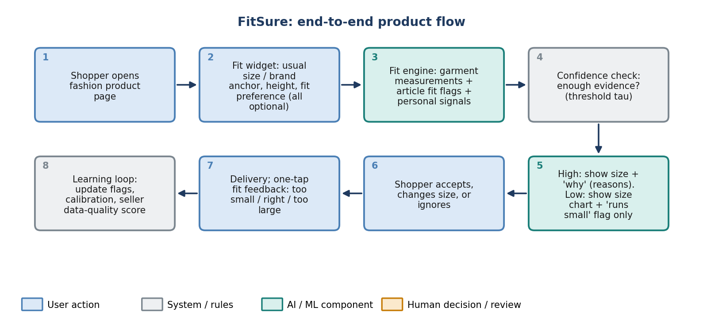
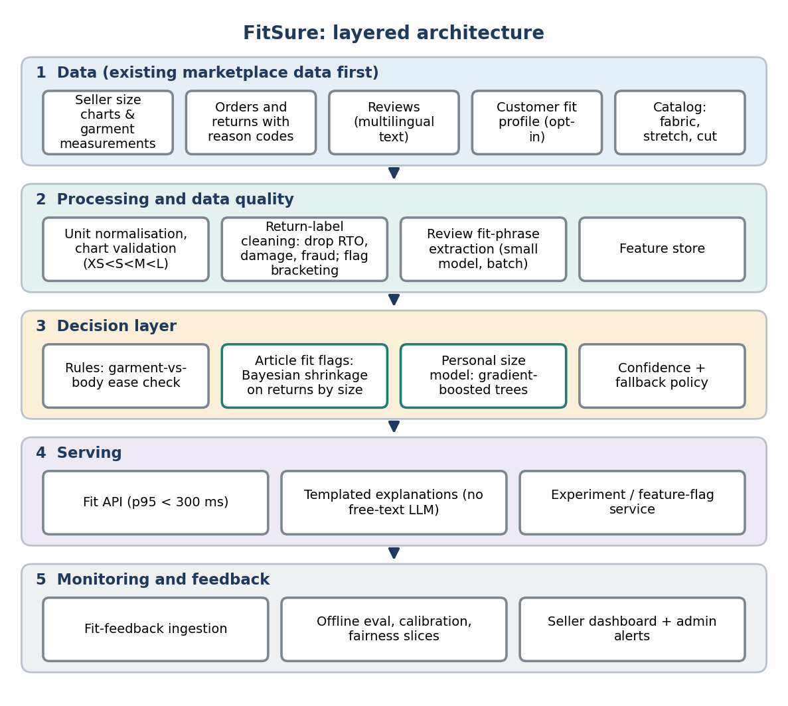
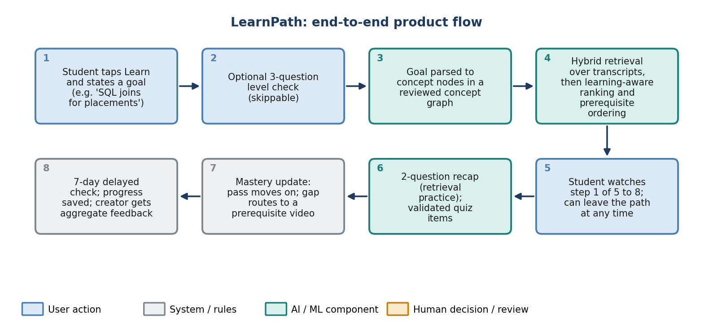
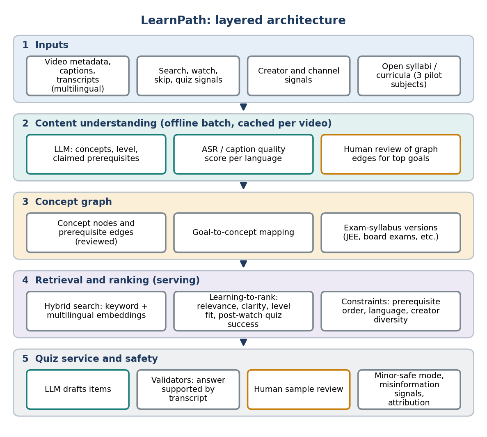
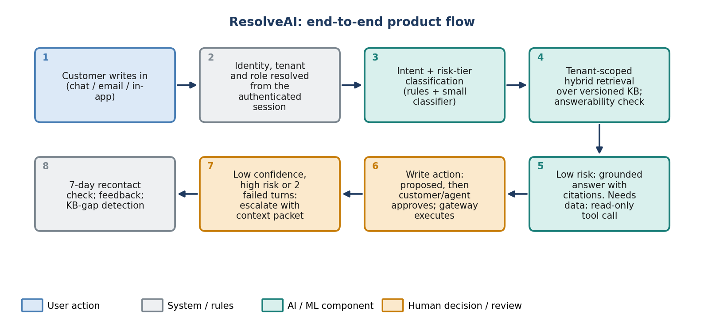
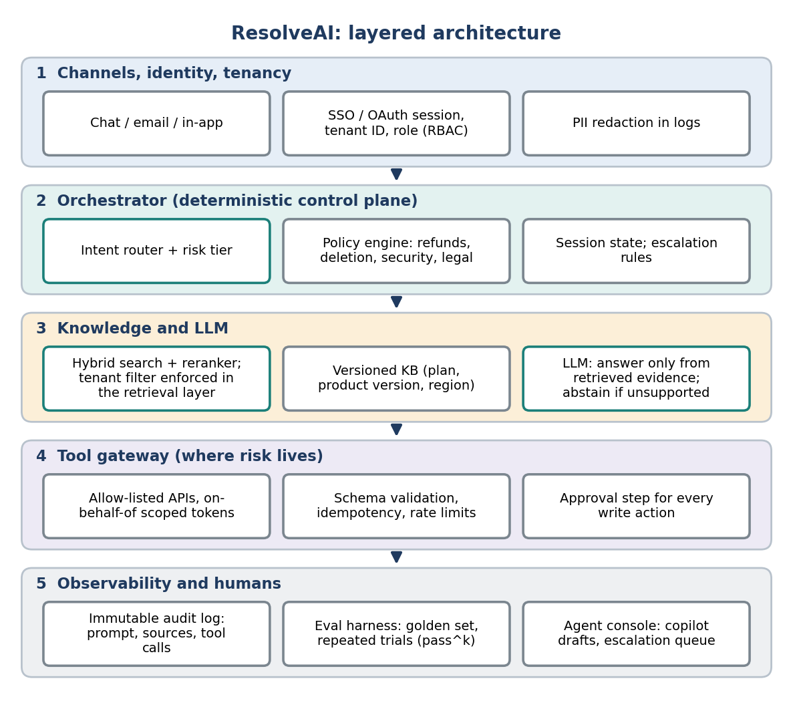
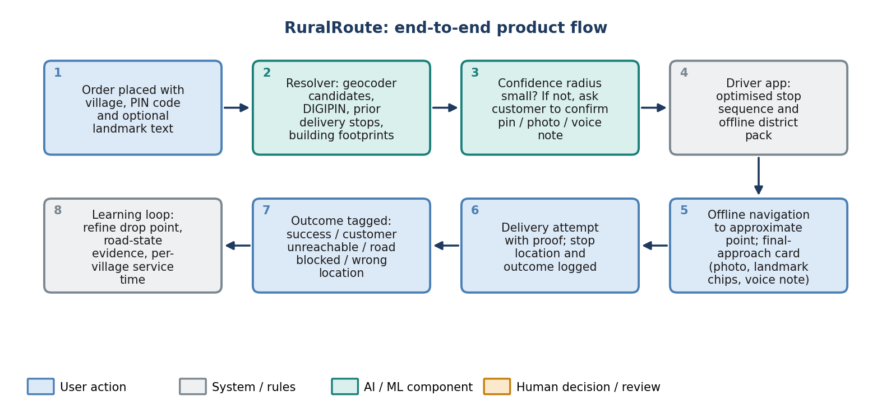
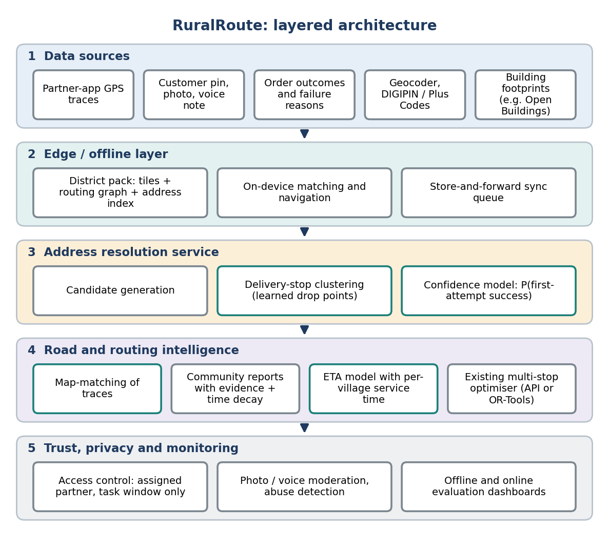

Four rewritten, evidence-checked case studies: e-commerce returns, YouTube learning, enterprise SaaS support, rural last-mile navigation
Prepared 25 October 2026. Web sources were retrieved in October 2026; the sources are listed in Appendix C.
How to read this portfolio
I kept the strongest parts of your original: the product boundaries, the discipline about what goes in the MVP, RICE and the guardrail thinking. I changed what the research showed was wrong, unsupported or already solved by an existing product. Every case follows the same 24 sections, and the labels below are used throughout.
| Label | Meaning |
|---|---|
| Assumption | My modelling input, not a fact. Replace with company data. |
| Proposed MVP Target | A target I am proposing; not a market benchmark. |
| Hypothesis | A user need or behaviour I believe but have not tested. No interview quotes are invented. |
| Evidence Not Found | I searched and could not verify the claim. |
I haven’t used quotes from well-known tech or product leaders, because I couldn’t verify any wording in this session and I’d rather have none than a wrong one.
Contents
Case Study 1: Reduce Returns in an E-commerce Marketplace Using AI (FitSure)
Case Study 2: Improve YouTube Learning Recommendations for Students (LearnPath)
Case Study 3: AI Support Agent for Enterprise SaaS (ResolveAI)
Case Study 4: Improve Google Maps for Rural Delivery and Navigation (RuralRoute)
Senior PM Review of the Portfolio
Appendices: product-flow sources, research-paper notes, references, quality check
Portfolio at a glance
| Case study | Primary user | Core problem | AI role | North Star metric | MVP | Main risk |
|---|---|---|---|---|---|---|
| 1. FitSure (returns) | Fashion shopper | Cannot tell how a seller’s garment will fit | Statistical fit flags; tree-based personal size model; small model for review text | Fit-tagged return rate | Validated measurements, fit flags, widget, feedback loop | Poor seller data and noisy return reasons |
| 2. LearnPath (YouTube) | Student, 17+ | No sequenced, verified path from goal to understanding | Offline LLM concept extraction; hybrid retrieval and ranking; validated quiz drafts | Mastery-verified goal completion | Reviewed concept graph, paths for 3 subjects, recap checks | Measuring learning wrongly; minors’ data rules |
| 3. ResolveAI (SaaS) | Customer admin and support agent | Slow, context-poor resolution of routine issues | RAG answers, intent and risk classifiers, copilot; policy rules for actions | Verified resolution rate | Search, copilot, 5 grounded intents, escalation, audit | Confident wrong answers; unauthorised actions |
| 4. RuralRoute (Maps) | Rural delivery partner | Ambiguous destination and no outcome learning | Confidence model for drop points; map matching; ETA models; existing optimiser | First-attempt delivery success | Drop-point resolver, final-approach card, offline pack, outcome capture | Location privacy and community-data quality |
What the research changed
| Finding (source) | Effect on the case study |
|---|---|
| Zalando’s mature program prevented 8% of size-related returns overall in 2025 | FitSure target cut from 10–15% to ≥4% (stretch 8%); data-first sequencing. |
| YouTube already has Courses, quizzes, an Ask button and a distraction-free player; recommendations already use satisfaction surveys | LearnPath repositioned from “new learning companion” to learner-owned, cross-creator, mastery-verified paths. |
| Unguarded GPT-4 raised practice scores but cut later exam scores 17%; DPDP restricts tracking of under-18s | No AI answer-giving and no under-18 personalisation in the MVP. |
| AI assistance raised support productivity about 14% mostly via novices; agents are inconsistent across repeated trials; companies are liable for bot errors | ResolveAI starts with the copilot, uses verified resolution, and gates write actions on repeat-reliability tests. |
| Google Maps already has offline navigation, two-wheeler mode, India landmark descriptors and a route optimiser; DIGIPIN exists | RuralRoute scope narrowed to rural address resolution, final-approach guidance and outcome learning; integrate rather than rebuild. |
Diagnosis of the original document
| Case | Already strong (kept) | Weak, generic or unsupported (changed) |
|---|---|---|
| 1 Returns | Narrow boundary; MVP avoids body scanning and AR; guardrail on over-optimising returns; consent for body data | Target 10–15% unsupported; ML before data; cold start mostly unaddressed; “style” returns lumped with fit; RTO vs return not separated; qualitative RICE |
| 2 YouTube | Learning vs watch-time instinct; goal-based path; quiz and Focus Mode; no new content production | Duplicated existing YouTube features without saying so; “completion” undefined; minors’ privacy under-analysed; no measurement of learning; Focus Mode’s business tension ignored |
| 3 SaaS | RAG with citations; policy layer; escalation context; low-risk actions only; audit log | “Autonomous resolution” rewards deflection; a vendor blog as evidence; no reliability testing; no cost model; security threats generic |
| 4 Maps | Local-knowledge framing; offline-first; privacy of home locations; drones rejected | Presented existing Google features as new; five MVP features at once; no data on connectivity; no experiment unit for shared road data; no unit economics |
Case Study 1: Reduce Returns in an E-commerce Marketplace Using AI
Executive Summary
Most people who buy clothes online have the same problem: they don’t know how this particular garment from this particular seller will fit. An “M” or a “40” means something different from one brand to the next, and the size charts sellers upload are often copied or wrong. Shoppers feel it first, especially first-time buyers in smaller cities, but sellers pay for it in margin and the marketplace pays for it in reverse logistics. Returns are large everywhere: US retailers expected 19.3% of online sales to come back in 2025, a McKinsey survey put about 70% of apparel returns down to fit or style, and Zalando says size and fit drive up to half of its returns. Indian marketplaces have started charging return fees, which tells you how much it hurts.
I don’t think AI is the first answer here. A lot of the win comes from plain data hygiene: getting sellers to publish real garment measurements and checking them. AI earns its place later, when you need to map someone’s usual size across thousands of brands, pull fit comments out of reviews in several languages, and know how confident to be. So the product, which I’m calling FitSure, is built in layers. First come validated measurements. Then every shopper sees article-level fit flags such as “runs small, size up if you’re between sizes”, which need no personal data. Where the evidence is strong enough, a personal size recommendation follows, and a one-tap fit question after delivery feeds the whole thing. Success means fewer fit-related returns without hurting conversion or satisfaction.
A note on the original target. Your document aimed for a 10–15% cut in size-related returns within 8–12 weeks. The best public benchmark I found is Zalando, which after years of work reports that its size and fit tools prevented 8% of size-related returns in 2025. That is a company-wide figure, not an A/B test, but it makes 10–15% in one quarter hard to defend in an interview. I’ve set a proposed MVP target of at least a 4% relative reduction (intent-to-treat) on eligible products, with 8% as a stretch.
Current World / Market Context (2026)
Scale. NRF and Happy Returns estimate 15.8% of 2025 US retail sales ($849.9B) would be returned, 19.3% for online sales; they also estimate 9% of returns are fraudulent, so not every return is preventable by better fit.
Apparel is the hard category. McKinsey’s pre-COVID returns survey found a 25% e-commerce apparel return rate and 70% of returns tied to poor fit or style. Note “or style”: sizing tools cannot fix style disappointment.
What mature players do. Zalando combines brand-provided data, purchase and return behaviour, customer fit feedback and fitting-model insights, and says its solutions prevented 8% of size-related returns overall in 2025. Its published research describes article-level “SizeFlags” that inform shoppers without demanding personal data, a production framework, MultiFlags, and deep personalised models. eBay research shows item attributes help in cold-start cases; a luxury-marketplace paper reports a size recommender using only transaction history.
India. There is no national size standard in daily use: NIFT’s INDIAsize programme set out to scan about 25,000 people to build one, and its 2026 adoption status is Evidence Not Found. Press reports say roughly one in four fashion items is returned and that Myntra charges high-return users. Practitioner blogs quote 25–40% fashion return or RTO rates; these mix customer returns with COD refusals and are unverified, so this case study does not rely on them.
User Research and Segmentation
No primary research exists for this portfolio, so every pain point below is a hypothesis to validate through user research (plan: 15–20 shopper interviews, 10 seller interviews, and a manual audit of 500 return records).
| User | Job-to-be-done | Pain points and current workaround | Desired outcome |
|---|---|---|---|
| Primary: shopper (segments: repeat buyer with history; first-time or COD buyer; “bracketer” who orders two sizes) | When I buy clothes online, I want to pick the size that will fit, so that I avoid waiting for a pickup and a refund. | Charts differ by seller; photos hide stretch and drape. Workarounds: read reviews, measure a garment at home, order two sizes, rely on free returns. | One confident size, a reason I can check, and an easy exchange if wrong. |
| Secondary: seller (small brand or reseller) | When I list a product, I want to publish accurate fit information with little effort, so that returns do not erode my margin. | Manual chart entry, copied charts, batch variation, no visibility into which size is failing. | A template, automatic checks, and a dashboard saying “size L runs small”. |
| Business stakeholders: category head, returns/ops lead, finance | When return volumes rise, I want to cut avoidable returns without blocking legitimate ones, so that contribution margin improves. | Return reasons are vague or mis-selected; fit returns mix with fraud and COD refusals. | Trustworthy fit-return data and a measurable cost reduction. |
User principle (kept from the original): the product must improve confidence, never pressure customers to keep an unsuitable item.
Problem Definition
Problem statement. Shoppers on a multi-seller marketplace lack reliable information about how a specific garment will fit their body and preference, which causes avoidable fit returns, reverse-logistics cost, seller margin loss and lower trust.
| 5 Whys | Answer |
|---|---|
| 1. Why are fit returns high? | Shoppers buy sizes that do not match their body or preference. |
| 2. Why do they choose wrong? | The listing does not show garment dimensions or how the item runs relative to its label. |
| 3. Why is that information missing? | Sellers enter free-form charts; there is no structured, validated measurement standard. |
| 4. Why has this persisted? | Seller effort is high, nobody shows sellers the cost of bad data, and return reasons are too noisy to attribute. |
| 5. Root cause | Information asymmetry between garment reality and buyer expectation, amplified by non-standard sizing and poor feedback loops. |
The hard parts are on the data side. Customers pick “size” as a return reason because it’s the easy option, some order two sizes on purpose, sellers have thousands of products with sparse history, and you only learn the outcome days later when the return window closes. Operationally, getting sellers to fill in measurements is slow. I also want to keep the problem and the solution apart: the problem is fit uncertainty. An AI size recommender is just one possible answer, and not the first one I’d build.
Why Existing Solutions Are Not Enough
| Today’s approach | Why it falls short | Non-AI alternative? |
|---|---|---|
| Static size-chart image | Not validated, not personal, often copied across listings. | Yes: structured measurements with validation. Build first. |
| “Read the reviews” | Fit comments are unstructured, multilingual and seller-biased. | Partly: surface “runs small” counts; extraction needs language models at scale. |
| Order two sizes (bracketing) | Shifts cost to reverse logistics; marketplaces respond with return fees. | Policy lever, but it penalises customers instead of helping them. |
| Vendor fit widgets | Exist as a category; fit to Indian garments and seller data is unproven. Evidence Not Found for marketplace-level incrementality. | Buy-vs-build decision in §13. |
Only partly. Structured measurements and size-chart validation need no AI at all, and simple statistics can produce fit flags. AI is worth it for three narrow jobs: mapping a shopper’s known sizes in one brand to another using outcome data, extracting fit comments from multilingual reviews, and working out how sure the system is. My rule is simple. I only ship the ML recommender if it beats the rules-plus-flags baseline offline by a margin we agree in advance. If it doesn’t, we ship the baseline.
Product Opportunity
| Component | Assessment |
|---|---|
| User value | Higher purchase confidence, fewer pickups and waits, a visible reason for the recommended size. |
| Business value | Lower reverse-logistics, QC and write-off cost; better seller margins; return-fee levers become less necessary. Conversion lift is not assumed: vendor claims of large lifts are unverified. |
| Strategic value | A proprietary fit-outcome dataset and a seller fit-quality score; sustainability benefit from fewer shipments. |
| Cost / risk | Seller data effort, label noise, privacy exposure if body data is collected, risk of recommendation bias (see §15). |
Value equation: User value + Business value + Strategic value − Cost/Risk. The case is positive only if fit-return reduction exceeds roughly 4.6% under the illustrative economics in §20.
Product Goal
fit-tagged return rate = fit-tagged returned units ÷ delivered units, on eligible SKUs. It is the outcome the product directly influences and has a fixed denominator. Because reason codes can be gamed or drift, it is always read with total return rate.
| Type | Metric | Why it matters |
|---|---|---|
| Supporting | Recommendation acceptance (ordered size = recommended); coverage (% eligible SKUs with valid measurements); fit-feedback response rate | Tests whether the mechanism works and whether data is rich enough to learn. |
| User | Post-delivery “fit was right” rate; exchange-instead-of-return rate for near-fit items; CSAT on fit guidance | Direct measure of shopper outcome, independent of return reason codes. |
| Business | Cost per fit return; contribution margin per order; seller return rate | Links to ROI in §20. |
| Guardrails | Conversion on eligible product pages (non-inferiority); total return rate; cancellation; latency p95 < 300 ms; accuracy gap across body-size and region slices | Prevents “winning” by suppressing purchases or shifting return reasons. |
Excluded as vanity: widget impressions and “AI interactions”, which do not show a better outcome.
Success Criteria
| Metric | Baseline | Proposed MVP Target | Evidence / note |
|---|---|---|---|
| Fit-tagged return rate (ITT) | Measure in Phase 0 | ≥4% relative reduction; stretch 8% | Zalando program-level: 8% of size-related returns prevented in 2025. Original 10–15% unsupported. |
| Conversion on eligible PDPs | Measure | No worse than −1% relative | Non-inferiority guardrail (proposed). |
| Recommendation acceptance | n/a | ≥25% of widget users | Hypothesis; revise after prototype. |
| Valid measurements on pilot SKUs | Audit | ≥60% of pilot-category SKUs | Proposed; coverage gates everything else. |
| Model vs baseline (offline) | Rules + flags | +3 points top-1 fit accuracy to justify ML | Proposed decision rule from §5. |
The original’s 30–40% size-related share is plausible but must be measured on this marketplace’s own data.
Solution Exploration
| Option | What it does | Main risk | Time to market |
|---|---|---|---|
| A. Better size charts | Structured, validated garment measurements per size. | Seller effort; static. | 6–8 weeks |
| B. Review and returns intelligence | Fit flags from returns by size plus fit phrases in reviews; works for every shopper. | Sparse data on new SKUs; noisy labels. | 8–10 weeks |
| C. ML size recommendation | Personal size from anchors, history and garment data. | Cold start; needs A and B data first. | 12–16 weeks |
| D. Computer-vision body measurement | Estimate measurements from photos or video. | Sensitive images, device quality, drop-off. | 6+ months |
| E. Virtual try-on (2D/3D/AR) | Show garment on the shopper. | Cost, accuracy, device fragmentation. | 9+ months |
| F. Return fees / return-risk scoring | Penalise or flag high-return behaviour. | Unfair to customers; trust damage. | 4–6 weeks |
Decision matrix (1–5, higher is better; cost, complexity and risk scored inversely; weights are my assumption):
| Criterion (weight) | A | B | C | D | E | F |
|---|---|---|---|---|---|---|
| User value (25%) | 3 | 4 | 5 | 4 | 3 | 1 |
| Business value (25%) | 3 | 4 | 5 | 3 | 2 | 3 |
| Cost (15%) | 5 | 4 | 3 | 2 | 1 | 4 |
| Complexity (10%) | 5 | 4 | 3 | 2 | 1 | 4 |
| Risk: privacy, trust, failure (15%) | 5 | 4 | 3 | 1 | 2 | 1 |
| Scalability (10%) | 4 | 5 | 4 | 2 | 2 | 4 |
| Weighted score | 3.90 | 4.10 | 4.10 | 2.60 | 2.00 | 2.55 |
I’d build A, then B, then C, in that order and not in parallel. B and C score the same, but C needs the measurement and outcome data that A and B produce. D stays on the shelf as an opt-in option for later, and E and F aren’t planned. On why not computer vision or AR first: accurate body measurements don’t help if the garment data is wrong, and A fixes that cheaply. Body images are sensitive and many shoppers won’t share them. I couldn’t find evidence that they add much at marketplace scale over cheaper signals (Evidence Not Found), and they cost far more per user. First-time COD buyers, a core group here, are also the least likely to complete a scan.
MVP Definition
| Tier | Features | Reason |
|---|---|---|
| Must have | Measurement template and validation for 3 pilot categories (men’s casual shirts, women’s tops/kurtas, men’s jeans); article fit flags; PDP fit widget with “why this size”; optional 3-input personalisation (usual size and brand, height, fit preference); one-tap post-delivery fit feedback; confidence-based fallback; basic seller data-quality view; experiment flags. | Smallest set that tests the core hypothesis and starts the data flywheel. |
| Should have | Anchor-brand mapping; exchange-first path for near-fit returns; regional-language UI. | Raise adoption and recover value from near misses. |
| Nice to have | Fabric-stretch inference; seller fit-quality score; “likely to fit me” filter. | Valuable once accuracy is proven. |
| Not in MVP | Photo or video body measurement; AR try-on; AI return-risk scoring; ranking penalties for sellers; automatic edits to seller listings. | Cost, privacy, fairness and unproven value; see §9 and §15. |
User Experience / Product Flow
The shopper lands on the product page of an eligible item. The widget asks for at most three things, all optional, and a returning user sees their saved answers already filled in. The system then gives a size with a reason in plain words (“Chest 42 in is about 2 in bigger than your usual M in Brand X; 61% of similar buyers kept L”). If it isn’t confident, it skips the personal recommendation and shows the validated chart with a “runs small” flag instead. The shopper can accept, change the size or ignore it, and we never block the purchase. After delivery one tap tells us whether it fit, and near-fit returns are offered an exchange.

Figure 1.1: FitSure product flow. Colours show where AI is used and where humans decide.
AI / Technical Architecture
The data comes from seller charts and garment measurements, orders, return reasons, delivery outcomes, review text and an opt-in fit profile. Before any modelling it gets cleaned: units normalised, sizes checked to be in sensible order (XS smaller than S smaller than M), and return labels filtered to remove COD refusals, damage and flagged fraud. Orders where someone bought two sizes of the same item are treated as weak labels. The model predicts whether a given size will be too small, right or too large for a given shopper and product.

Figure 1.2: FitSure layered architecture.
The core is classical ML. Fit flags use Bayesian shrinkage, which pulls thin products toward category averages so we don’t over-flag items with little history. The personal model is gradient-boosted trees (or ordinal regression) using garment measurements, brand and category offsets, the product’s flag, the shopper’s sizes in other brands, height, fit preference and stretch. Rules handle the ease checks, seller anomaly detection and the fallback, because those need to be cheap and explainable. A small language model reads Hindi, English and Hinglish reviews in batch to pick out fit comments, and explanations are templated from the model’s real features, so nothing is free-written and nothing can be made up. I don’t see a case for RAG here. Fit feedback recalibrates the flags weekly and retrains the model monthly, and we watch calibration, accuracy by slice, coverage, seller data drift and latency.
Technology Selection
| Decision | Choice and why | Why not the alternatives |
|---|---|---|
| Rules vs ML | Rules for ease checks and fallback; ML for personal mapping. | Pure rules cannot learn brand-specific cuts; pure ML hides errors and fails on cold start. |
| Classical ML vs deep learning | Gradient-boosted trees plus shrinkage: strong on tabular data, cheap CPU serving, easy to audit. | Deep models pay off with very large per-customer histories; revisit once data volume justifies it. |
| LLM vs small model | Small multilingual model, batch, once per review. | A large LLM per request adds cost, latency and variance for a task that is classification. |
| Build vs buy widget | Build the data layer and flags in-house; evaluate vendor for the UI if time-to-market matters. | Vendors cannot own seller data quality or outcome labels, which is where the value is. |
| Real-time vs batch | Precompute flags and seller features nightly; compute personal score at request time. | Fully real-time retraining is unnecessary at this scale. |
Accuracy Strategy
| Layer | Method | Metric and proposed threshold |
|---|---|---|
| Garment data | Unit normalisation; size-monotonicity checks; outlier detection vs category distribution; seller anomaly flags | ≥95% of pilot SKUs pass validation after seller correction |
| Labels | Human audit of 500 returns to measure reason-code accuracy; exclude RTO, damage, fraud | Audit agreement reported; model trained only on audited label rules |
| Review extraction | Labelled set of 1,000 reviews across Hindi, English, Hinglish | F1 ≥ 0.85 per language, else disabled for that language |
| Size model | Time-based split; calibration (expected calibration error); per-slice accuracy | Beat baseline by +3 points; ECE under 0.05 (proposed) |
| Confidence | Choose τ so that recommendations meet a precision target; abstain below it | Recommended-size “fit right” ≥ baseline; coverage reported with precision |
| Online | A/B test (§17); fit-feedback agreement; seller disputes | Primary and guardrail metrics |
Human-in-the-loop: category managers review the top 50 SKUs by flag volume weekly; sellers can dispute a flag with evidence.
Responsible AI
| Dimension | Risk | Control |
|---|---|---|
| Privacy and consent | Height, weight and body data are sensitive; DPDP Rules 2025 were notified in Nov 2025 with most duties applying from 2027. | Collect only optional, necessary inputs; purpose-limited; delete-on-request; no raw images in MVP; plan to comply early. |
| Fairness | Models trained on majority sizes may be less accurate for plus-size or regionally different body shapes. | Report accuracy by size band, gender, region; block launch if gap exceeds a pre-agreed limit. |
| Explainability | Opaque size advice erodes trust. | Templated reasons derived from actual features. |
| Security and misuse | Sellers may fake measurements or reviews. | Anomaly detection, verified-purchase reviews only, audit trail. |
| Data retention | Fit profiles can persist indefinitely. | Retention limit and visible profile controls. |
| Human override | Wrong advice must never be final. | Alternatives always shown; exchange path; no AI-based return denial. |
What the AI must never do: deny or charge for a return based on a model score; infer sensitive attributes; nudge towards a size purely to reduce returns; present a recommendation as a guarantee; store body images without explicit opt-in.
Product Prioritisation
RICE = Reach × Impact × Confidence ÷ Effort. Reach is the % of eligible weekly shoppers exposed; Impact on a 0.25–3 scale; Effort in person-months. All inputs are my estimates to be validated; the original’s qualitative High/Medium ratings were converted to numbers.
| Feature | Reach | Impact | Conf. | Effort | RICE | Priority and reason |
|---|---|---|---|---|---|---|
| Post-delivery fit feedback | 70 | 2 | 80% | 1.5 | 74.7 | P0: cheap; creates labels for everything else |
| Article fit flags | 80 | 2 | 70% | 4 | 28.0 | P0: reaches everyone, no personal data |
| Measurement template + validation | 80 | 1 | 80% | 3 | 21.3 | P0: prerequisite for accuracy |
| Fit widget with explanation | 80 | 1 | 70% | 3 | 18.7 | P0: delivery vehicle |
| Seller data-quality view | 40 | 1 | 60% | 2 | 12.0 | P1: fixes the upstream cause |
| Review fit-signal extraction | 50 | 1 | 60% | 3 | 10.0 | P1: adds signal to new SKUs |
| ML personal recommender | 35 | 3 | 50% | 6 | 8.8 | P1: low reach until data exists; strategic, so sequenced after P0 |
| Photo body measurement | 10 | 3 | 20% | 12 | 0.5 | P3: hold |
| AR try-on | 8 | 1 | 20% | 18 | 0.09 | P3: do not build |
RICE ranks by value per effort, not dependency: the recommender ranks low yet is the only personalised feature, so it is scheduled after the data features it depends on.
Experimentation / A-B Testing
| Element | Design |
|---|---|
| Hypothesis | Showing fit flags and (where confident) a personal recommendation reduces fit-tagged returns without reducing conversion. |
| Control / treatment | Control: existing chart and reviews. T1: flags + validated chart. T2: T1 + personal recommendation. |
| Unit of randomisation | User (stable ID; device ID if logged out), not session, to avoid users seeing both experiences. Analysis at order level with user-clustered errors. |
| Duration | Exposure 3–4 weeks, then wait for delivery lag and the return window: read results at about 6–8 weeks. The original’s 4–6 weeks ignores return lag. |
| Sample (illustrative) | Assume 10% fit-return rate on eligible delivered orders [A]. To detect a 5% relative drop (0.5 points) at α = 0.05 and 80% power needs about 55,000 delivered orders per arm (n ≈ 2(1.96+0.84)² p(1−p) / δ²). |
| Metrics | Primary: fit-tagged return rate, ITT. Secondary: total return rate, exchange rate, “fit was right”, acceptance. Guardrails: conversion (non-inferiority), cancellations, CSAT, latency, complaints. |
| Statistics | Pre-register; CUPED variance reduction; sample-ratio check; Holm correction for T1/T2 and segment cuts; check novelty decay; check reason-code shift by comparing total returns. |
| Outcome | Decision |
|---|---|
| Primary improves ≥ target, guardrails hold | Expand to 50%, then add categories. |
| Small improvement, driven by flags only | Keep T1; defer ML spend; test anchor-brand mapping. |
| No change or conversion falls | Diagnose funnel: coverage, accuracy, adoption, behaviour. Fix the weakest link and retest once; if still flat, stop. |
| Total returns flat but fit reasons fall | Treat as reason-code shift, not success. |
Launch Strategy
| Phase | Timeline | Objective and deliverables | Success criteria |
|---|---|---|---|
| 0 Research | Weeks 1–4 | Baselines; return-reason audit; 15–20 shopper and 10 seller interviews; data audit. | Baselines agreed; coverage estimate known. |
| 1 Prototype | Weeks 5–10 | Template, validation, flags computed offline; shadow-mode backtest of the recommender. | Backtest beats rules baseline by +3 points or ML deferred. |
| 2 MVP | Weeks 8–14 | Widget, explanations, feedback, seller view, experiment flags in 3 categories. | Latency and data-quality bars met. |
| 3 Experiment | Weeks 15–22 | 10% of eligible users; read at 6–8 weeks. | Primary ≥ 4% relative, guardrails hold. |
| 4 Limited rollout | Weeks 23–30 | 50% then 100% of pilot categories; add 3 categories. | Effect holds in new categories. |
| 5 Scale | Week 31+ | Marketplace-wide; seller fit-quality score. | Positive net benefit per §20. |
Cost Optimisation
| Cost area | Expensive path | Lean path and trade-off |
|---|---|---|
| Modelling | Custom deep model, GPU serving | Trees + shrinkage on CPU; revisit deep models only if a measured accuracy gap exists. |
| Language models | Large LLM per page view | Small model, batch, once per review: for 2M reviews at about 200 tokens (400M tokens) cost is under about $400 at an assumed ≤$1 per million tokens; verify pricing. |
| Body capture | CV pipeline, storage of images | Defer; saves build, storage and consent overhead. |
| Seller onboarding | Manual entry | Bulk template; OCR of chart images with validation, accepting some manual review. |
Business Case / ROI
Every number below is an assumption, so swap in real data before using it. Say 12M eligible delivered orders a year, a 25% return rate and 40% of those fit-related, which gives 1.2M fit returns. Each costs about ₹150 (pickup, QC, repacking, partial write-off). Build cost is ₹105 lakh (roughly six people for six months at ₹35 lakh loaded annual cost) and running cost is ₹30 lakh a year. Net benefit is returns avoided × ₹150 minus ₹30 lakh, and ROI is net benefit ÷ ₹105 lakh.
| Reduction in fit returns | Returns avoided | Annual benefit | Net benefit | ROI (yr 1) | Payback |
|---|---|---|---|---|---|
| 3% | 36,000 | ₹54 lakh | ₹24 lakh | 23% | ≈52 months |
| 5% | 60,000 | ₹90 lakh | ₹60 lakh | 57% | ≈21 months |
| 8% (Zalando-like) | 96,000 | ₹144 lakh | ₹114 lakh | 109% | ≈11 months |
| 12% | 144,000 | ₹216 lakh | ₹186 lakh | 177% | ≈7 months |
Break-even: about 1.7% reduction covers run cost; about 4.6% gives a 24-month payback. Conversion and seller-side gains are excluded.
Risks and Mitigation
| Risk | Prob. | Impact | Mitigation | Owner |
|---|---|---|---|---|
| Poor seller data (technical) | High | High | Validation, seller dashboard, onboarding incentives | Catalog PM |
| Label noise and reason-code gaming (AI) | High | High | Label audit; track total returns; exclude RTO | Data science |
| Low widget adoption (adoption) | Med | Med | Prefill, ≤3 inputs, flags work without input | Product |
| Wrong recommendation (AI) | Med | High | τ threshold, alternatives, exchange path | ML lead |
| Privacy and consent (regulatory) | Med | High | Data minimisation; DPDP readiness | Legal / Privacy |
| Bias across body types (AI) | Med | High | Slice metrics; launch gate | Responsible AI lead |
| Conversion drop (business) | Low–Med | High | Guardrail; kill switch | Product |
| Seller manipulation (security) | Med | Med | Anomaly detection; verified reviews | Trust & Safety |
Competitive / Existing Product Analysis
Comparison uses category-level descriptions. Head-to-head accuracy evidence between players is Evidence Not Found; “proposed” cells are claims to be proven, not facts.
| Dimension | Chart + reviews (status quo) | Mature fit programs (e.g. Zalando) | FitSure (proposed) |
|---|---|---|---|
| User experience | Manual, effortful | Integrated profile and flags | Flags for all; personal advice when confident |
| AI capability | None | Flags, deep personal models | Statistics and trees first; deep later if justified |
| Personalisation | None | High where history exists | Opt-in, anchor-based |
| Accuracy | Low, unmeasured | 8% of size-related returns prevented overall | To be measured; target ≥4% |
Roadmap
| Horizon | Add | Why now |
|---|---|---|
| 0–3 months | Audits, template, validation, flags in shadow mode, feedback capture | Data before models. |
| 3–6 months | Widget, explanations, seller view; A/B test | Prove the mechanism. |
| 6–12 months | ML recommender if it beats baseline; review extraction; exchange-first; more categories | Personalise where evidence supports it. |
| 12+ months | Seller fit-quality score; fabric-stretch intelligence; optional measurement input after privacy review; evaluate CV only if plateau | Platform value and gated expansion. |
Final PM Recommendation
Would I build it? Yes, in layers. The problem is big and measurable, and the first two layers are cheap and low-risk.
What first? Standardised measurements, article fit flags, the feedback loop, then the widget.
What would I deliberately not build? Computer vision, AR, AI return-risk scoring, and anything that denies or penalises returns.
Continue if: pilot SKUs reach ≥60% valid measurements; the backtest beats the baseline by +3 points; ITT fit-return reduction is ≥4% with conversion non-inferior.
Stop or pivot if: coverage stays under about 30% after two seller-incentive attempts, or the A/B shows no effect despite healthy adoption.
Biggest risk: poor seller data and noisy reason codes. Biggest opportunity: a proprietary fit-outcome dataset.
Case Study 2: Improve YouTube Learning Recommendations for Students
Executive Summary
Students already use YouTube as their main classroom, but a goal like “understand SQL joins for placements” turns into a string of separate searches. Nothing puts the videos in order of what you need to know first, checks that you understood, or stops you drifting off to something else. I’m focusing on Indian college and school students and self-learners to begin with. YouTube says learning and how-to content got over 5.5 billion US views in one month of 2025, and it has added AI “Ask”, quizzes, Courses and a distraction-free classroom player. The pieces exist. What’s missing is a path the learner owns, across creators.
Where does AI help? Working out what each video teaches, at what level and with what assumed knowledge, across millions of transcripts and several Indian languages, is something language models can do in batch. So the idea, which I’m calling LearnPath, is this: a student states a goal, the system maps it to a human-reviewed concept graph, finds candidate videos, ranks them for teaching quality, orders them by prerequisite, and checks understanding with a couple of short questions. The measure of success is how many students actually reach their goal, not how many minutes they watch.
A correction to the original. Your draft said LearnPath would turn YouTube from a feed into a learning companion. YouTube already has creator-built Courses with progress from beginner to expert, creator quizzes, an Ask button used by over 20 million people in December 2025, and a Player for Education that removes ads, comments and recommendations (40 million+ student hours in H1 2025). So the honest differentiator is narrower: learner-initiated, cross-creator paths with measured mastery. That’s the gap this case study is built on.
Current World / Market Context (2026)
Behaviour. Learning is a primary use of YouTube: 5.5B+ US learning views in June 2025; 94% of teachers use the platform, per YouTube (company-reported, not independent).
Existing features. Ask button (AI questions about academic videos), quizzes (about 3.5M answered per month in early 2025), Courses, Study Hall with Arizona State University, and the Player for Education.
Recommendations already go beyond watch time. YouTube says it measures “valued watchtime” through 1–5 star surveys and counts only 4–5 star ratings, alongside likes, shares and dislikes. So the real question is not “watch time bad, learning good”; satisfaction is not learning either. A video can feel satisfying and teach nothing.
Research. Google’s LearnLM work argues generative AI must be built and evaluated for pedagogy, not just helpfulness. A PNAS field experiment with nearly 1,000 students found unguarded GPT-4 raised practice scores 48% but lowered later unassisted exam scores 17%; a guarded tutor mitigated this. Retrieval practice (testing) improves long-term retention versus restudying.
India. Rural India holds 55% of internet users (488M of 886M in 2024, IAMAI–Kantar), so low-end devices, data cost and Indic languages are the default case, not the edge case.
Regulation. India’s DPDP Rules were notified in November 2025; the substantive duties, including verifiable parental consent and limits on tracking children, apply from 2027. This directly constrains personalised learning products for under-18s (see §15).
User Research and Segmentation
All needs below are hypotheses to validate through user research (plan: 20 student interviews across school, college and exam-prep, 8 teachers, 6 educational creators; diary study of 30 study sessions).
| User | Job-to-be-done | Pain and workaround | Desired outcome |
|---|---|---|---|
| Primary: college or exam-prep student, 17+ (separate minor mode) | When I need to learn a topic for an exam or interview, I want a trustworthy sequence of videos at my level, so that I learn efficiently. | Too many videos; unclear level; drift into entertainment. Workarounds: saved playlists, WhatsApp study groups, copy-pasting channel lists. | A short path, a way to know I understood, and no lost hour. |
| Secondary: teacher or tutor | When I assign video, I want students to stay on topic and show understanding, so that class time is not wasted. | Distraction, unverifiable viewing, variable accuracy. Workaround: embed in Classroom with Player for Education. | Aggregate progress without surveillance of individuals. |
| Secondary: educational creator | I want my video to reach learners who need it, so that serious content is not buried by entertainment. | No signal on whether viewers learned. | Attribution, aggregate comprehension feedback. |
| Business: YouTube Learning, Trust & Safety, Policy, Ads | I want learning to deepen platform trust and institutional adoption without harming watch-time health. | Education features today are separate surfaces. | Measured learning outcomes and zero safety regressions. |
Problem Definition
Problem statement. Learners with a specific goal have no learner-owned way to turn YouTube’s videos into a sequenced, level-appropriate path with feedback on understanding, so many sessions end with fragments, gaps or drift.
| 5 Whys | Answer |
|---|---|
| Why do students not finish learning goals? | They stitch together unrelated videos with gaps in prerequisites. |
| Why gaps? | Search and feed rank by relevance and satisfaction, not by “what you need before this”. |
| Why not prerequisites? | Videos are not annotated with concepts, level and assumed knowledge. |
| Why not annotated? | Creators describe videos for discovery, not for sequencing; structured Courses require creator authoring. |
| Root cause | No machine-readable map of what videos teach and depend on, and no measurement of understanding. |
Two things make this hard. Speech recognition for Indian languages and mixed Hindi-English speech is uneven, and I found no per-language accuracy figures (Evidence Not Found), so we’d have to measure it. And expert review of concept graphs doesn’t scale across every subject. Again, the problem is unsequenced, unverified learning. Focus Mode and AI quizzes are candidate fixes, not the problem itself.
Why Existing Solutions Are Not Enough
| What exists | What it solves | Gap |
|---|---|---|
| Search filters, saved playlists | Finding and saving videos | No sequencing, no feedback; playlists go stale; non-AI fix for discovery. |
| Creator Courses | Structured, creator-authored curriculum with progress | Coverage depends on creators; within one creator’s view. |
| Creator quizzes, Ask button | In-video practice and explanation | Not tied to a goal, prerequisite or mastery record. |
| Player for Education | Distraction-free embed for classrooms | Teacher-led, not learner-led; no path. |
| Third-party MOOCs and courses | Structure and credentials | Cost, language, and many students still start on YouTube. Evidence Not Found on the share. |
Not for filters or playlists. AI is justified for two things: pulling concepts, level and prerequisites out of transcripts at scale and across languages, and drafting practice questions. Retrieval, ranking and sequencing are classical techniques, and tracking mastery is simple statistics. Teacher-curated paths are a cheaper alternative for popular topics, but they can’t cover the long tail of goals.
Product Opportunity
| Component | Assessment |
|---|---|
| User value | Less wasted time; clearer gaps; retention gains from retrieval practice. |
| Business value | Deeper loyalty among learners; stronger institutional case for education surfaces; creator ecosystem health. Revenue per learner: Evidence Not Found; no revenue numbers are asserted. |
| Strategic value | A learning-outcome signal (quiz success after watching) that improves ranking for educational queries; a differentiator versus course platforms. |
| Cost / risk | Annotation and review cost (small, §19); risk to creator trust, minors’ privacy, and watch-time perception. |
Value equation: learning value + loyalty and ecosystem value + strategic signal − (annotation, review and serving cost) − (safety, creator and regulatory risk).
Product Goal
how can YouTube optimise for learning outcomes rather than engagement? Watch time is not assumed bad: a 40-minute lecture on-goal is good. What matters is whether watching converts into understanding. North Star Metric: mastery-verified goal completion rate = share of started goals where the learner passes the mastery check and a delayed retrieval check at about 7 days.
| Type | Metric | Why |
|---|---|---|
| Supporting | Goal-aligned share of session time; path step completion; recap accuracy; prerequisite-gap recoveries | Shows the mechanism: staying on goal and repairing gaps. |
| User | Self-reported confidence (before/after); 7-day delayed retrieval score; search-to-useful-video rate | Learning, not just activity. |
| Business / ecosystem | Return to goal within 14 days; creator reach on educational content; institutional adoption | Sustained value and ecosystem health. |
| Guardrails | Valued-watchtime satisfaction; total watch time (tolerance band, not zero tolerance); creator-reach concentration; safety reports; minors’ data collection = none beyond session | Avoids trading learning for harm elsewhere. |
Excluded: raw quiz counts, “AI questions asked” and total minutes. Quizzes can be gamed by guessing; so delayed retrieval and item quality matter.
Success Criteria
| Metric | Baseline | Proposed MVP Target | Note |
|---|---|---|---|
| Mastery-verified goal completion | Measure in pilot | +5 percentage points vs control among goal-setters (e.g. 30% → 35%) | Original +15% completion not measurable as defined. |
| Goal-aligned session time | Measure | +20% relative | Replaces “reduce drift by 20%”, which lacked a definition. |
| Recap quiz item validity | n/a | ≥98% items answerable from transcript after validation | Proposed; audited by humans. |
| Watch-time guardrail | Measure | Not below −2% for pilot users | Tolerance, to be agreed with leadership. |
| Safety and minors | 0 incidents | 0 behavioural profiles built for under-18 accounts | Policy requirement (§15). |
All targets are proposed MVP targets, not benchmarks; no public benchmark for cross-creator path completion was found.
Solution Exploration
| Option | What it does | Main risk | Time |
|---|---|---|---|
| A. Better search filters | Level, duration, language, syllabus tags | No sequence | 6–8 wks |
| B. Curated playlists | Human-built topic lists | Stale; does not scale | 4–6 wks |
| C. AI-generated learning paths | Goal → concepts → ordered videos | Wrong prerequisites; creator credit | 4–6 mths |
| D. Adaptive recommendations | Re-rank by mastery after each step | Needs C and reliable mastery signal | 6+ mths |
| E. AI-assisted quizzes | Recap questions from transcripts | Wrong items; fatigue | 3–4 mths |
| F. Focus Mode | Opt-in suppression of unrelated recommendations | Perceived as restrictive; watch-time tension | 4–6 wks |
| Criterion (weight) | A | B | C | D | E | F |
|---|---|---|---|---|---|---|
| Learning value (30%) | 3 | 3 | 5 | 4 | 4 | 2 |
| Business / strategic (20%) | 3 | 2 | 4 | 4 | 3 | 2 |
| Cost (15%) | 5 | 4 | 3 | 2 | 3 | 4 |
| Complexity / time (10%) | 5 | 4 | 2 | 2 | 3 | 4 |
| Risk (15%) | 5 | 4 | 3 | 3 | 3 | 3 |
| Scalability (10%) | 5 | 2 | 4 | 4 | 4 | 5 |
| Weighted score | 4.00 | 3.10 | 3.80 | 3.35 | 3.40 | 2.95 |
My choice: ship A first, then a narrow version of C for three subjects with E recaps, make F an opt-in toggle, and leave D for later. Search filters score best on cost and risk, but they can’t sequence learning, so they’re a quick win rather than the answer. Paths have the highest learning value, so I’d build them, but keep them narrow and human-reviewed, because wrong prerequisites are the main way this fails. Adaptive re-ranking waits until we have mastery data. Focus Mode is cheap and under the user’s control, and I’d reject any version that forces it on people.
MVP Definition
| Tier | Features | Reason |
|---|---|---|
| Must have | Goal entry; optional 3-question level check; paths for 3 pilot subjects (programming, mathematics, English) with 5–8 steps; reviewed concept graph; recap of 2 validated questions; progress view; “report a wrong or low-quality video”; creator attribution on every step; 18+ or school-managed accounts only. | Tests whether goal-based paths improve verified learning. |
| Should have | Opt-in Focus Mode; Hindi, Telugu and English; 7-day delayed check; save notes. | Adoption and Indic coverage. |
| Nice to have | Offline packs; teacher-created paths; practice-problem links; skill badges. | After quality is proven. |
| Not in MVP | Under-18 personalisation; unrestricted AI doubt-solving; certification; teacher dashboard with individual-level data. | Child-safety, DPDP and learning-harm risk. |
User Experience / Product Flow
A student opens the Learn tab, or gets a prompt after an educational search, and types one sentence about their goal. An optional three-question check sets the starting level. They see a short path with a one-line reason per step (“Covers INNER vs LEFT JOIN; assumes you know primary keys”) and can reorder, skip or leave at any point. After each video there are two recap questions. If they miss a concept the path routes them back to a prerequisite video, and a delayed check a week later tells us whether it stuck.

Figure 2.1: LearnPath product flow.
AI / Technical Architecture
The system works on transcripts and captions for a pilot corpus only, not all of YouTube, with a language-quality score per video. A language model reads each transcript once, in batch, to extract concepts, level, assumed prerequisites and learning outcomes, and drafts quiz items. It does not invent paths from nothing and it does not answer open questions in the MVP. The concept graph is seeded from open syllabi and model suggestions, then reviewed by humans for the top goals, which is the safeguard against made-up prerequisites. Search is hybrid, keyword plus multilingual embeddings, because exact terms like “LEFT JOIN” and loose paraphrases both matter. A reranker then scores videos on relevance, clarity (survey satisfaction, completion), level fit, how well people do on quizzes after watching, and language, with hard rules for prerequisite order and creator variety. Minor-safe mode and syllabus-version checks are rules. Quiz results, skips and reports retrain the ranking weekly, and we monitor path quality, prerequisite violations, quiz validity and performance by language.

Figure 2.2: LearnPath architecture. Heavy AI work is offline and cached; serving is classical retrieval and ranking.
Technology Selection
| Decision | Choice and why | Why not |
|---|---|---|
| LLM vs smaller model | Large model for offline concept extraction and quiz drafting (quality matters, volume bounded, cached); small classifiers for level and language. | Per-request large-model calls at serving would be costly and slow on low-end devices. |
| Hybrid vs vector-only search | Hybrid with reranking. | Vector-only misses exact technical terms; keyword-only misses paraphrase and Hinglish. |
| Knowledge graph vs pure embeddings | Small reviewed graph for prerequisites. | Embeddings measure similarity, not “must come before”; they cannot enforce order. |
| RAG vs fine-tuning | Grounding on transcripts (retrieval) for quizzes and explanations. | Fine-tuning does not guarantee transcript-supported answers and is costly to update. LearnLM shows pedagogy tuning helps tutoring; out of MVP scope. |
| Cloud API vs custom | Use existing in-house infrastructure. | Building a separate stack adds cost without benefit. |
Accuracy Strategy
| What is measured | Method | Proposed threshold |
|---|---|---|
| Path relevance and order | Teachers rate 200 goal paths (relevance, level, prerequisite correctness); inter-rater agreement (Cohen’s κ) reported | Median rating ≥4/5; prerequisite-violation rate <5% |
| Concept extraction | Expert labels on 500 videos | F1 ≥0.8 on concepts; disabled per language if below |
| ASR / caption quality | Word-error-rate sample per language | Videos below a quality bar excluded from paths |
| Quiz validity | Automatic check that the correct answer is supported by the transcript; human audit of a sample; item statistics after exposure | ≥98% valid; items with poor discrimination retired |
| Learning effect | A/B with delayed retrieval test (§17) | Primary metric |
| Fallbacks | If concept graph confidence is low, show search results with filters instead of a path | Never show an unreviewed path for top-traffic goals |
Responsible AI
| Dimension | Risk | Control |
|---|---|---|
| Minors and privacy | DPDP bars tracking and behavioural monitoring of under-18s and requires verifiable parental consent; the educational-institution exemption applies to institutions, so whether it covers a platform feature is a legal question, not assumed. | MVP limited to 18+ or school-managed contexts; for others, session-only personalisation from the stated goal, no persistent behavioural profile; legal review before expanding. |
| Misinformation and quality | Pseudo-science, outdated exam syllabi, wrong quiz items. | Source-quality signals; syllabus versioning; item validation; report button; human review for top paths. |
| Fairness | Favouring English or large creators over Indic and small creators. | Language-slice and creator-size metrics; exposure floors. |
| Over-reliance on AI | Answer-giving AI can reduce learning. | No unrestricted AI answers in MVP; if added, hints before answers. |
| Creator rights | Paths could reduce channel visibility or credit. | Attribution, creator opt-out, aggregate feedback. |
| Manipulation | Focus Mode used to increase engagement or restrict choice. | User-controlled, easy exit; no dark patterns. |
What the AI must never do: build a persistent behavioural profile of a minor; present an unverified quiz item as correct; hide the exit from Focus Mode; use sensitive attributes (caste, religion, disability, income) for recommendations; give final answers to graded work in place of guidance.
Product Prioritisation
| Feature | Reach | Impact | Conf. | Effort | RICE | Priority and reason |
|---|---|---|---|---|---|---|
| Search filters (level, language, syllabus) | 70 | 1 | 80% | 2 | 28.0 | P0: quick win |
| Recap quizzes with validation | 40 | 2 | 60% | 4 | 12.0 | P0: evidence-backed mechanism |
| Opt-in Focus Mode | 20 | 1 | 50% | 1.5 | 6.7 | P1: low cost; user-controlled |
| Concept graph + review (3 subjects) | 25 | 2 | 60% | 5 | 6.0 | P0: prerequisite for paths |
| Goal-based paths | 25 | 3 | 50% | 8 | 4.7 | P0: core hypothesis; low RICE due to narrow reach |
| AI doubt-solving | 30 | 2 | 30% | 8 | 2.3 | P2: learning-harm risk |
| Teacher dashboard | 8 | 3 | 40% | 10 | 1.0 | P2: privacy complexity |
| Certification | 5 | 1 | 20% | 12 | 0.08 | P3: out of scope |
Estimates are mine and untested. Paths rank low on RICE because reach is limited to goal-setters, but they carry the central hypothesis and are kept in MVP; RICE informs ordering, not scope.
Experimentation / A-B Testing
| Element | Design |
|---|---|
| Hypothesis | Goal-based paths with recap checks raise mastery-verified goal completion versus normal discovery, with no safety regression. |
| Design | Encouragement design: randomise users to be offered “Set a learning goal” (treatment) or not (control). Analyse intent-to-treat on all offered users, and the effect on compliers (instrumental variable), because goal-setters self-select. |
| Unit and duration | User; 6 weeks exposure plus a 3-week delayed check. |
| Measurement | Both arms get the same sampled 5-question survey assessment (an invitation independent of the path) so the control arm is not given practice by the product itself. Response bias is monitored. |
| Sample (illustrative) | To detect +5 points on a 30% pass rate (α 0.05, power 80%): about 1,320 assessed users per arm; at an assumed 30% response rate, roughly 4,400 exposed users per arm. |
| Secondary / guardrails | Goal-aligned time, satisfaction, total watch time band, creator reach, reports, safety. |
| Statistics | Pre-registration; subgroup by language and level; correction for multiple subgroup tests; attrition analysis. |
| Outcome | Decision |
|---|---|
| Mastery up, guardrails hold | Expand subjects and languages. |
| Engagement up, mastery flat | Do not ship: this is the engagement trap; revisit item quality and path ordering. |
| Mastery up, watch time down within band | Ship; report the trade-off to leadership. |
| No effect | Diagnose: path quality (ratings), adoption, quiz fatigue; try narrower path or recap-only variant; stop if flat twice. |
Launch Strategy
| Phase | Timeline | Deliverables | Success criteria |
|---|---|---|---|
| 0 Research | Weeks 1–4 | Interviews; session diary; corpus audit; legal review of minors | Clear goal taxonomy; legal position |
| 1 Prototype | Weeks 5–12 | Concept graph for programming; expert-rated paths; quiz validator | Rating ≥4/5; violation <5% |
| 2 MVP | Weeks 10–20 | 3 subjects, 3 languages; recap; Focus toggle; reports | Quality bars met |
| 3 Experiment | Weeks 21–32 | Encouragement design; delayed test | +5 pts mastery; guardrails hold |
| 4 Limited rollout | Weeks 33–44 | More subjects, exam syllabi | Effect replicates |
| 5 Scale | Week 45+ | Broader languages; teacher tools (aggregate) | Sustained effect; safety clean |
Cost Optimisation
| Area | Lean choice | Cost logic (assumptions) |
|---|---|---|
| Annotation | Batch annotate only the pilot educational corpus; cache per video | 2M videos × 8k tokens = 16B tokens; at an assumed $0.10–0.30 per million tokens, about $1,600–4,800 one time; verify pricing. |
| Serving | Reuse existing search and ranking infrastructure; no per-request LLM | Marginal serving cost near existing educational search. |
| Quizzes | Draft by model, validate automatically, human sample | Human review of 300 top paths × 2 reviewers × 1.5 hours × $20 per hour = $18,000 per cycle. |
| Concept graph | Human-review only top goals | Cuts expert cost; long tail uses search fallback. |
| Do not cut | Item validation, language-slice testing, legal review | Failures here cost more than they save. |
Business Case / ROI
I couldn’t find a credible public figure for revenue per learner or for the retention effect of a feature like this, and I’d rather say so than invent a revenue ROI. What I can do is set out the structure: annual net benefit equals the value of retained learners and institutional adoption, minus annotation, review, serving and team cost. The cost side is small: roughly $1.6–4.8k one-time for annotation, about $18k per review cycle, plus a team (I’ve assumed 8 people for 9 months). So the real question for the pilot is how much extra learner retention or institutional revenue would cover that team cost. Evidence Not Found. If the pilot can’t show a lift in mastery and in return-to-goal, nobody should assume the business case.
Risks and Mitigation
| Risk | Prob. | Impact | Mitigation | Owner |
|---|---|---|---|---|
| Wrong prerequisites (AI) | Med | High | Reviewed graph; violation-rate gate | Learning PM |
| Minors’ data / DPDP (regulatory) | Med | High | 18+ MVP; legal review | Legal |
| Quiz errors (AI) | Med | High | Validation; human sample | ML lead |
| Watch-time tension (business) | Med | Med | Tolerance band; show trade-off | Product |
| Low goal-setting adoption (adoption) | High | Med | Prompt on educational queries; skip level check | Design |
| Creator backlash (product) | Med | Med | Attribution, opt-out, feedback | Creator team |
| Weak Indic ASR (technical) | Med | Med | Quality score; exclude poor videos | ML lead |
| Overreliance on AI help (user) | Low | High | Hints-first design | Learning PM |
| Expert-review bottleneck (operational) | High | Med | Limit to top goals; partner with educators | Ops |
Competitive / Existing Product Analysis
| Dimension | YouTube today | Course platforms | LearnPath (proposed) |
|---|---|---|---|
| Experience | Search and feed; Courses; Ask; quizzes; classroom player | Structured curricula, credentials | Learner-owned path across creators |
| AI capability | Ask button, recommendation signals | Varies; Evidence Not Found | Offline concept extraction; ranked sequencing |
| Personalisation | History-based | Limited | Goal- and mastery-based |
| Accuracy | Not publicly specified for learning | Editorial control | To be measured (§14) |
| Cost / access | Free | Often paid | Free; pilot cost small |
| Safety | Mature policy stack | Closed content | Needs minor-safe design |
This is a product-extension proposal; the claim to prove is mastery lift, not that YouTube lacks educational features.
Roadmap
| Horizon | Add | Why |
|---|---|---|
| 0–3 months | Research, legal review, filters, concept graph for programming | Foundations and a quick win. |
| 3–6 months | 3-subject paths, recaps, Focus toggle; pilot | Test the core hypothesis. |
| 6–12 months | Experiment; add languages and syllabi; delayed checks | Scale what works. |
| 12+ months | Adaptive re-ranking; guarded AI doubt-solving; aggregate teacher views; offline packs | Only after mastery signal and safety are proven. |
Final PM Recommendation
Would I build it? Yes, as a narrow pilot. The gap is real and cheap to test, but the benefit isn’t proven, so it should earn funding in stages.
What first? Filters, a reviewed concept graph for one subject, expert-rated paths, validated recap questions.
What would I not build? Under-18 personalisation, unrestricted AI answers, forced Focus Mode, teacher dashboards with individual tracking, certification.
Continue if: path ratings ≥4/5, prerequisite violations <5%, +5 points mastery in the encouragement test, guardrails intact.
Stop if: engagement rises but mastery does not, quiz validity <98%, or legal review blocks the user base.
Biggest risk: measuring learning wrongly and optimising a proxy. Biggest opportunity: a learning-outcome signal that improves ranking for every educational query.
Case Study 3: AI Support Agent for Enterprise SaaS
Executive Summary
Support teams at enterprise SaaS companies spend most of their day on questions that are already answered somewhere in the documentation. Customers wait anyway, because the answer is hard to find or doesn’t match their plan, version or setup. Customer admins and end users feel it first, then support agents, and the budget sits with support leaders and finance. Interest in AI agents is rising fast: Salesforce’s survey of 3,075 service professionals found adoption went from 39% to 66% of organisations between 2025 and 2026. That’s a vendor survey, so read it as momentum, not proof of results. Language models fit the problem because they can read documentation and ticket history and write a grounded answer in the customer’s language, which keyword search can’t.
The product, ResolveAI, is built in steps of increasing autonomy. First comes better help-centre search and a copilot that helps human agents. Then a customer-facing assistant that answers a handful of low-risk question types with citations. Then read-only look-ups of account data, and only after that, write actions that a human approves. The target is a lower cost per resolved ticket and a faster first response, with satisfaction no worse than today.
A correction to the original. Your main metric, “autonomous resolution rate”, rewards deflection, because a customer who gives up still counts as resolved. I’ve replaced it with verified resolution: no human involved, no recontact on the same issue within 7 days, and correct when audited. I’ve also swapped your 30–40% target in 12 weeks for a lower, staged proposed target (§8). And full autonomy isn’t the MVP, for reasons of evidence rather than caution; see §9.
Current World / Market Context (2026)
Adoption. Salesforce reports 66% of customer-service organisations using AI agents in 2026, up from 39%, and 70% of adopters seeing measurable value within 60 days (survey March–April 2026, published May 2026). The sponsor sells these products; respondents describe their own organisations.
Forecasts and caution. Gartner predicts agentic AI will autonomously resolve 80% of common service issues by 2029, with a 30% cost reduction; Gartner also expects over 40% of agentic AI projects to be cancelled by the end of 2027 (as reported secondary). Both can be true: ambition is high and execution is hard.
Productivity evidence. In a study of about 5,000 support agents, an AI assistant raised issues resolved per hour by about 14% on average (published QJE version: about 15%), with the largest gains (about 34–35%) for novices and near zero for the most experienced. The tool assisted humans; it did not act autonomously.
Reliability evidence. τ-bench tests tool-using agents against simulated customers and written policies; in the 2024 paper, even the best function-calling agent (GPT-4o) succeeded on fewer than 50% of tasks and its consistency fell below 25% when the same task was repeated eight times. Models have improved since; the lesson is to measure repeat reliability on your own tasks, not trust a single run.
Liability. A Canadian tribunal held Air Canada responsible for wrong refund-policy information given by its website chatbot, rejecting the argument that the chatbot was separate from the company. Customers can rely on what the bot says.
Security. The OWASP Top 10 for LLM Applications (2025) lists prompt injection first and excessive agency as a distinct risk. Tool-using assistants inherit both.
User Research and Segmentation
Needs are hypotheses to validate through user research (plan: audit 1,000 tickets by intent; interview 10 agents, 8 customer admins and 4 support leaders; shadow 20 live chats).
| User | Job-to-be-done | Pain and workaround | Desired outcome |
|---|---|---|---|
| Primary: customer admin or end user at an enterprise customer | When something breaks or I need a setting, I want a correct answer or fix quickly, so that my team keeps working. | Wait times; generic articles; repeating context. Workarounds: search the docs, ask a colleague, open a ticket and wait. | Right answer for my plan and version, with a clear path to a human. |
| Secondary: Tier-1 and Tier-2 support agent | When a ticket arrives, I want the answer and the customer’s context in front of me, so that I solve it fast and accurately. | Repetitive tickets; hunting through docs and past tickets. | Drafts I can trust and edit; harder cases routed to me with context. |
| Business: head of support, finance, security and compliance | I want lower cost and faster resolution without compliance, security or trust risk. | Cost per ticket; auditors need traceability; fear of wrong answers. | Evidence the system is safe, measurable and reversible. |
Problem Definition
Problem statement. Customers wait too long for answers to routine questions, because the knowledge needed exists but is hard to find, is not tailored to their account, and human agents are the only way to apply it.
| 5 Whys | Answer |
|---|---|
| Why is resolution slow? | Routine tickets queue behind a limited agent pool. |
| Why do routine tickets need an agent? | Self-service search does not return an answer specific to the customer’s plan, version or configuration. |
| Why is search insufficient? | Documentation is long, versioned inconsistently and written for the product, not the problem. |
| Why not fix the docs? | Content ownership is fragmented and no one sees which questions fail. |
| Root cause | Knowledge is not delivered in context at the moment of need, and the feedback loop to fix knowledge gaps is weak. |
The main constraints are keeping each customer’s data isolated, stale documentation, ambiguous questions, agents’ trust, round-the-clock coverage and auditability. As before, I’d separate the problem from the solution. The problem is slow, context-poor resolution. An AI agent is one answer, and fixing the documentation is another.
Why Existing Solutions Are Not Enough
| What exists | What it does | Gap |
|---|---|---|
| Keyword help-centre search | Finds articles | No synthesis or account context; non-AI improvements (synonyms, ranking, better titles) can be cheap and effective. |
| Rule-based FAQ chatbot | Scripted answers to known questions | Brittle; cannot handle phrasing variation or combine sources. |
| Human-only Tier-1 | Accurate, flexible | Costly, 9-to-5 coverage, repetitive work. |
| Generic LLM chatbot on docs | Fluent answers | No version awareness, no tenant isolation, ungrounded risk. |
Partly. For finding what is already documented, better search and clearer docs recover some of the value cheaply, and should happen first. AI is needed for what search can’t do: pulling together several articles and past tickets, adapting to the customer’s configuration, and drafting replies in other languages. Anything that changes an account or moves money should stay under deterministic policy.
Product Opportunity
| Component | Assessment |
|---|---|
| User value | Faster answers at any hour; fewer repeated explanations. |
| Business value | Lower cost per ticket; agent capacity redirected to complex work; reduced escalations. Quantified in §20 with assumptions. |
| Strategic value | Knowledge-gap detection that improves documentation and product; a governed agent platform reusable for sales and success. |
| Cost / risk | Wrong answers (liability), data leakage, action errors, agent resistance. |
Value equation: cost saved + capacity gained + satisfaction retained − (inference, platform, review, governance, incident risk).
Product Goal
verified resolution rate for eligible intents = conversations resolved without a human, with no recontact on the same issue within 7 days, and judged correct in audit samples. Cost per verified resolution is its financial twin.
| Type | Metric | Why |
|---|---|---|
| Supporting | First-response time; agent handle time; copilot suggestion acceptance rate; citation coverage | Mechanism and adoption. |
| User | CSAT and customer effort score, versus human baseline; recontact rate | Experience, not deflection. |
| Business | Cost per verified resolution; agent capacity freed; escalation rate | Links to ROI. |
| Guardrails | Audited incorrect-answer rate; security and data-leak incidents (zero tolerance); abandonment after AI turn; escalation quality score | Prevents hidden harm. |
Excluded as vanity: total chats handled and “deflection” without verification.
Success Criteria
| Metric | Baseline | Proposed MVP Target | Note |
|---|---|---|---|
| Verified resolution (eligible intents) | Measure | 10–15% by week 12; 20–30% by month 9 | Replaces 30–40% in 12 weeks; vendor-reported figures are not a benchmark for this product. |
| Agent handle time | Measure | −5% to −10% for copilot users | Context: about 14% average in a published study; different setting. |
| CSAT | Human baseline | Non-inferior (margin −0.1 on a 5-point scale) | Guardrail. |
| Audited incorrect-answer rate | n/a | <2% on released intents | Proposed; gate for each intent. |
| Security / data-leak incidents | 0 | 0 | Hard gate. |
Solution Exploration
The central design idea is the autonomy ladder: answering → recommending → taking action. Risk rises at each rung because the cost of an error changes from “a customer is misinformed” to “a human may trust a wrong draft” to “the system has changed something that may be irreversible”.
| Rung | What AI does | Typical failure | Control needed |
|---|---|---|---|
| Answer | Responds to customers from approved knowledge | Wrong or outdated information; company is liable | Grounding, citations, abstention, version filtering |
| Recommend | Drafts replies and suggests next steps to an agent | Automation bias: agent accepts a wrong draft | Source display, edit tracking, QA sampling |
| Act | Calls APIs: reset, resend, create, refund | Irreversible change; privilege misuse; prompt injection through retrieved text or emails | Scoped tokens, allow-lists, approvals, idempotency, audit |
| Option | Description | Time |
|---|---|---|
| A. Better help-centre search | Ranking, synonyms, answer snippets | 4–6 wks |
| B. FAQ chatbot | Scripted flows | 4–8 wks |
| C. RAG assistant | Grounded answers for customers | 3–4 mths |
| D. Agent-assist copilot | Drafts and context for human agents | 3–4 mths |
| E. Tool-using agent | Calls APIs with approval gates | 6–9 mths |
| F. Fully autonomous agent | Resolves and acts without humans | 9+ mths; high risk |
| Criterion (weight) | A | B | C | D | E | F |
|---|---|---|---|---|---|---|
| Customer value (25%) | 2 | 2 | 4 | 3 | 5 | 5 |
| Business value (25%) | 2 | 2 | 4 | 4 | 5 | 5 |
| Cost (10%) | 5 | 4 | 3 | 3 | 2 | 1 |
| Complexity (10%) | 5 | 4 | 3 | 3 | 2 | 1 |
| Risk (20%) | 5 | 4 | 3 | 5 | 2 | 1 |
| Scalability (10%) | 4 | 3 | 4 | 4 | 3 | 3 |
| Weighted score | 3.40 | 2.90 | 3.60 | 3.75 | 3.60 | 3.20 |
My choice: A and D first, then C for a few intents, then E behind approvals. Not F. The copilot scores highest because a human stays in the loop and it has the strongest productivity evidence. I wouldn’t make full autonomy the MVP, for five reasons. One wrong refund or data disclosure outweighs a lot of correct answers. Agents are still inconsistent across repeated runs. The company is liable for what the bot says. The data and knowledge hygiene autonomy needs isn’t there yet. And trust should be earned by measured results at the lower rungs.
MVP Definition
| Tier | Features | Reason |
|---|---|---|
| Must have | Improved search; agent copilot (draft, cited sources, account summary); customer-facing grounded answers for 5 low-risk intents; tenant-scoped, version-aware retrieval; identity from authenticated session; escalation with a context packet; audit log; feedback buttons; admin dashboard. | Delivers value with human oversight and measurable accuracy. |
| Should have | Read-only account tools (plan, invoice status, integration health); ticket creation and status; multilingual replies; knowledge-gap report. | Personalises answers without write risk. |
| Nice to have | Approval-gated write actions (resend invoice, trigger password-reset email); voice; proactive incident notices. | After accuracy gates are met. |
| Not in MVP | Autonomous refunds, deletions, security or legal answers, permission changes, self-modifying knowledge base. | Irreversible or high-liability. |
User Experience / Product Flow
The customer writes in through the in-product widget or email, in free text, with no category form to fill out. The assistant says it is AI, answers with citations and offers a human at any point. Low-risk questions get answered directly, account questions use read-only tools, and any change is proposed first and needs confirmation. After two failed turns, negative sentiment, low confidence or a sensitive topic, the case goes to a person with the transcript, the sources already tried, the account context and a suggested next step. The customer rates the answer, and a check seven days later shows whether it was really resolved.

Figure 3.1: ResolveAI product flow. Amber boxes are human decisions.
AI / Technical Architecture
The knowledge base holds product docs, release notes, runbooks, redacted resolved tickets and policies, and every chunk carries its tenant, product version, plan and region. Search is hybrid (BM25 plus embeddings) with a reranker, and the tenant and permission filter is enforced in the retrieval layer, not in the prompt. The language model is used where it earns its place: writing a grounded answer from retrieved passages, summarising a thread for escalation, and translating. A small classifier handles intent and risk tier, a deterministic policy engine covers refunds, deletion, security and legal topics, and an answerability check makes the system say “I don’t know” when evidence is thin. Every action goes through a gateway with allow-listed APIs, scoped tokens, schema validation, idempotency keys and approval for writes. Helpful/unhelpful votes, agent edits, recontacts and audit labels feed the evaluation sets and a knowledge-gap report. We track groundedness, citation precision, abstention rate, tool-call errors, cost per conversation and latency.

Figure 3.2: ResolveAI architecture. Deterministic control plane around a constrained LLM.
Technology Selection
| Decision | Choice and why | Why not |
|---|---|---|
| RAG vs fine-tuning | RAG: knowledge changes weekly; citations enable audit; updates need no retraining. | Fine-tuning bakes in stale facts and gives no source trace. |
| Hybrid vs vector-only | Hybrid + rerank: error codes and API names need exact match; paraphrases need embeddings. | Vector-only misses identifiers. |
| Large vs small model | Strong model for answer generation at first; small classifiers for routing, risk tier and reranking. | Small models for everything risk quality; large models for routing waste cost. |
| Rules vs LLM for policy | Rules for refunds, deletion, security, legal. | An LLM cannot guarantee policy compliance; τ-bench shows policy-following is a weak point. |
| Build vs buy | Buy orchestration if the team is small; own the knowledge pipeline, tool gateway, evaluation and audit. | Building the whole stack delays value; outsourcing governance loses control. |
| Cloud API vs self-hosted | Managed model APIs with data-processing agreements; self-host only if residency demands it. | Self-hosting adds cost and maintenance. |
Accuracy Strategy
| Layer | Method | Proposed threshold |
|---|---|---|
| Retrieval | Labelled set of 500 historical tickets mapped to correct articles; recall@5 and reranker precision | recall@5 ≥ 90% per released intent |
| Answer correctness | Human-graded sample; LLM-as-judge calibrated against humans before use | <2% incorrect on released intents; judge agreement reported |
| Groundedness | Every claim must cite a retrieved passage; automatic check | ≥ 95% of claims supported |
| Abstention | Answerability classifier; measure precision of “I don’t know” | No answer is better than a wrong one; tune τ |
| Tool calls | Scripted policy tests and adversarial tests | 100% pass on policy gates |
| Reliability | Run each test scenario k=5 times (pass^k idea) | pass^5 ≥ 90% before any write action is enabled |
| Shadow mode | AI drafts silently beside human replies for 2–4 weeks | Agreement and error analysis before exposure |
| Monitoring | Daily sampling, drift alerts, stale-content flags | Auto-disable an intent on breach |
Responsible AI
| Dimension | Risk | Control |
|---|---|---|
| Privacy and data retention | Customer data in prompts and logs. | PII redaction, retention limits, tenant-scoped storage, DPAs with model providers. |
| Security | Prompt injection through documents, emails or attachments; excessive agency; cross-tenant leakage. | Treat all retrieved and user text as untrusted; no tool call authorised by retrieved text; scoped tokens; output validation; red-team before launch. |
| Hallucination and liability | Wrong policy statements are binding in practice. | Citations, abstention, policy engine, disclaimers where appropriate, QA audit. |
| Fairness and language | Poorer quality in non-English languages. | Per-language evaluation; disable a language if below bar. |
| Explainability and auditability | Auditors need reasons. | Immutable log of prompt, sources, tool calls, outputs. |
| Disclosure and consent | Customers must know they are talking to AI. | Clear disclosure; easy route to human. |
| Regulatory | GDPR and SOC 2 readiness; sector rules. | Compliance review before launch; jurisdiction-specific obligations to be confirmed by counsel. |
What the AI must never do: decide refunds above a threshold, deletions, security-incident or legal responses; change permissions; reveal internal system details or other tenants’ data; act on instructions found inside retrieved content; claim to be human.
Product Prioritisation
| Feature | Reach | Impact | Conf. | Effort | RICE | Priority and reason |
|---|---|---|---|---|---|---|
| Improved help-centre search | 80 | 1 | 80% | 2 | 32.0 | P0: cheap, immediate |
| Agent copilot | 100 | 2 | 70% | 5 | 28.0 | P0: strongest evidence |
| Escalation context packet | 60 | 1 | 80% | 2 | 24.0 | P0: improves every handoff |
| Knowledge-gap detection | 50 | 1 | 60% | 3 | 10.0 | P1: fixes root cause |
| RAG answers for 5 intents | 40 | 2 | 60% | 6 | 8.0 | P1: after shadow-mode accuracy |
| Read-only account tools | 30 | 1 | 70% | 3 | 7.0 | P1: personalisation, low risk |
| Approval-gated write actions | 15 | 2 | 50% | 8 | 1.9 | P2: after pass^k gate |
| Autonomous refunds | 5 | 3 | 20% | 12 | 0.25 | P3: do not build |
Estimates are mine and need validation with ticket data.
Experimentation / A-B Testing
| Element | Design |
|---|---|
| Hypothesis | The copilot and grounded answers reduce cost per verified resolution while keeping CSAT non-inferior and incorrect-answer rate below 2%. |
| Copilot test | Randomise agents (blocked by experience level) to copilot on/off; compare handle time and quality scores. |
| Customer-facing test | Randomise at account level (colleagues in one account should see consistent behaviour); control: current flow; treatment: AI for eligible intents. |
| Sample (illustrative) | CSAT non-inferiority (margin 0.1 on a 5-point scale, SD about 1.1, one-sided α 0.05, power 80%): about 1,500 surveyed conversations per arm; at a 20% response rate, about 7,500 conversations per arm; clustering by account increases this. |
| Duration | 6–8 weeks plus 7-day recontact window. |
| Guardrails | Audited incorrect-answer rate, security incidents, abandonment, escalation quality, cost per conversation. |
| Statistics | Pre-registered non-inferiority test; cluster-robust errors; check novelty and seasonality; pre-agreed stop rule for any severe incident. |
| Outcome | Decision |
|---|---|
| Cost down, CSAT and accuracy within limits | Add intents and languages; consider read-only tools. |
| Cost down, CSAT down | Pause expansion; analyse transcripts; fix escalation and tone. |
| No cost change | Check eligibility coverage, abstention rate and knowledge gaps before blaming the model. |
| Any severe incident | Disable the affected intent immediately; post-incident review. |
Launch Strategy
| Phase | Timeline | Deliverables | Success criteria |
|---|---|---|---|
| 0 Research | Weeks 1–4 | Ticket taxonomy; baselines; KB audit; threat model | Top 20 intents; baselines agreed |
| 1 Prototype | Weeks 5–10 | Search improvements; copilot in shadow mode; eval sets | Retrieval and answer targets met offline |
| 2 MVP | Weeks 9–16 | Copilot live; 5 intents behind a flag; audit log; dashboard | Incorrect <2%; zero incidents |
| 3 Experiment | Weeks 17–24 | A/B on agents and accounts | CSAT non-inferior; cost per verified resolution down |
| 4 Limited rollout | Weeks 25–36 | More intents; read-only tools; second language | Targets hold at 50% traffic |
| 5 Scale | Week 37+ | Approval-gated actions; broader channels | pass^5 gate met; positive net benefit |
The original reached 20% A/B and expansion within 16 weeks; shadow-mode accuracy work and security review make about 36 weeks more realistic.
Cost Optimisation
| Area | Lean choice | Trade-off |
|---|---|---|
| Model usage | Route: small model for classification and reranking; stronger model only for generation; cache frequent answers | Added routing complexity versus lower cost per conversation. |
| Context size | Retrieve top 5 reranked passages, not whole documents | Slightly lower recall; reduces tokens. |
| Illustrative inference | 4 turns × 5k input tokens + 2k output tokens at assumed $3/$15 per million = about $0.09 per conversation; a small-model-heavy path about $0.02 | Prices are assumptions; verify. |
| Infrastructure | Managed vector search; no GPUs; reuse existing ticketing and CRM | Vendor dependence. |
| Human review | Audit samples, not every answer; automate checks | Never remove audits for write actions. |
| Do not cut | Security testing, evaluation sets, audit logging | One incident outweighs savings. |
Business Case / ROI
Again, all of this is illustrative, so replace each input with real numbers. I’ve assumed 60,000 contacts a month, half of them eligible intents, and $7 per human-handled ticket. Build cost is $350k (five people for six months at $120k loaded annual cost, plus $50k for security and evaluation). Run cost is $498k a year: $72k inference, $96k infrastructure and tooling, and $330k for three people on knowledge, QA and ML operations. Annual benefit is verified resolutions × $7 × 12 plus the remaining tickets × $7 × the handle-time saving × 12. Net is benefit minus run cost, and ROI is net divided by $350k.
| Scenario | Verified resolution of eligible | Copilot saving | Annual benefit | Net benefit | ROI (yr 1) | Payback |
|---|---|---|---|---|---|---|
| Conservative | 15% (4,500/mo) | 5% | $611k | $113k | 32% | ≈37 months |
| Base | 30% (9,000/mo) | 8% | $1,099k | $601k | 172% | ≈7 months |
| Stretch | 45% (13,500/mo) | 10% | $1,525k | $1,027k | 293% | ≈4 months |
Break-even: with a 5% copilot saving, about 10% verified resolution covers run cost; about 18% gives a 24-month payback. At low ticket volumes the fixed run cost dominates, so a smaller company should buy a platform rather than build. The estimate omits CSAT effects and incident risk.
Risks and Mitigation
| Risk | Prob. | Impact | Mitigation | Owner |
|---|---|---|---|---|
| Wrong answer, liability (AI) | Med | High | Grounding, abstention, audit, policy engine | Support PM |
| Prompt injection / data leak (security) | Med | High | Untrusted-content rules, tenant filter, red team | Security |
| Stale knowledge (operational) | High | Med | Version metadata, freshness alerts | Knowledge owner |
| Agent resistance (adoption) | Med | Med | Copilot first, co-design, show time saved | Support lead |
| Customer distrust (product) | Med | Med | Disclosure, easy human route | Product |
| Cost overrun (business) | Med | Med | Routing, caching, budget alerts | Finance / Eng |
| Unreliable repeat behaviour (technical) | Med | High | pass^k testing | ML lead |
| Regulatory change (regulatory) | Low–Med | High | Counsel review; configurable controls | Legal |
Competitive / Existing Product Analysis
Categories, not vendor claims; vendor-specific accuracy comparisons: Evidence Not Found.
| Capability | Chatbot | RAG assistant | Agent-assist copilot | Tool-using agent | Autonomous agent |
|---|---|---|---|---|---|
| What it does | Scripted answers | Grounded answers | Drafts for humans | Calls APIs, often with approval | Resolves and acts alone |
| Personalisation | Low | Medium | High (agent sees account) | High | High |
| Accuracy risk | Low but limited | Medium (hallucination) | Medium, human-checked | Medium-high | High |
| Cost | Low | Medium | Medium | High | Highest |
| Safety | High | Medium | High | Needs gateway | Low without mature controls |
| Evidence | Established | Growing | Field study | Benchmarks show reliability gaps | Forecast only |
Roadmap
| Horizon | Add | Why |
|---|---|---|
| 0–3 months | Search, copilot (shadow), eval sets, threat model | Safest value first. |
| 3–6 months | Copilot live; 5 grounded intents; audit log | Prove accuracy and savings. |
| 6–12 months | Read-only tools; approvals for reversible writes; more languages | Earn autonomy with evidence. |
| 12+ months | Proactive incident outreach; KB auto-suggestions with human approval; selective autonomy for reversible actions | Only if pass^k and incident record support it. |
Final PM Recommendation
Would I build it? Yes, if monthly volume is big enough to cover the fixed run cost (very roughly above 30k contacts). Below that I’d buy a platform and own the knowledge and governance.
What first? Search improvements and the copilot in shadow mode, with an evaluation harness.
What would I not build? An autonomous refund or account-change agent in the first year.
Continue if: incorrect-answer rate <2%, CSAT non-inferior, cost per verified resolution falling, zero security incidents.
Stop or pause if: audits find >2% errors in a released intent, any cross-tenant leak, or CSAT drops beyond margin.
Biggest risk: confident wrong answers or unauthorised actions. Biggest opportunity: a knowledge feedback loop that fixes documentation and product friction at the source.
Case Study 4: Improve Google Maps for Rural Delivery and Navigation
Executive Summary
In rural India a delivery often fails after the driver has reached the right village. The address is a village name and a PIN code, the house has no number, and the customer can’t describe the way. Delivery partners and their customers feel it first, and the cost lands on small logistics operators and the e-commerce or government-service platforms that pay for second attempts. The timing is good. Rural users are now most of India’s internet users (488M of 886M in 2024, IAMAI–Kantar), India Post launched a national grid-based location code, DIGIPIN, in 2025, and Google already ships landmark-based address descriptors in India. The building blocks exist. What’s still unreliable is the last 200 metres.
I’m proposing a “verified drop point” loop, which I’ve called RuralRoute. The system works out where an order is likely to go and how sure it is. Only when it isn’t sure does it ask the customer, once, to confirm with a pin, a photo or a voice note. The driver navigates offline and gets a final-approach card near the door. Then we record where deliveries actually succeed and use that to make the next delivery to the same place easier. Most of this is plain geospatial logic, with a few small models. The goal is a higher first-attempt success rate and fewer phone calls.
A correction to the original. Your draft listed landmark addressing, offline maps, community road updates, multi-stop optimisation and vehicle routing as new MVP features. Public documentation shows that Google already offers offline maps with turn-by-turn navigation in India (since 2015), a two-wheeler mode (since 2017), address descriptors with landmarks that are generally available in India but “most effective in densely populated areas” and can come back empty, and a Route Optimization API with time windows and capacity limits. So I’ve re-scoped the MVP to what’s really missing: rural address resolution, final-approach guidance, learning from delivery outcomes, and evidence-based road status.
Current World / Market Context (2026)
Users and connectivity. 886M active internet users in India in 2024, 55% rural; a later edition reports about 958M users with 57% rural (secondary summary). Coverage and signal quality still vary within these numbers: user counts do not prove coverage along rural roads (Evidence Not Found for road-level coverage).
Addressing. DIGIPIN, launched by India Post in May 2025, divides India into about 4 m × 4 m cells, each with a 10-character code usable offline; the postal department positions it for areas without clear addresses. It identifies a point, not how to reach it.
Google capabilities. Offline maps with turn-by-turn directions and two-wheeler mode in India; address descriptors with landmarks and areas, GA in India at no extra cost in the Geocoding SKU; Route Optimization API for multi-vehicle, multi-stop plans; 2026 Geocoding release notes show continued work on destination-level precision such as navigation points and entrances (some experimental); Google Research’s Open Buildings dataset provides 1.8B building footprints, including South Asia, with confidence scores.
Strategic window. Rural e-commerce, government services and financial delivery are expanding (specific volumes: Evidence Not Found); the reliability of the last 200 m is the constraint on all of them.
User Research and Segmentation
All needs are hypotheses to validate through user research (plan: ride-alongs with 20 drivers in two districts; 30 customer interviews; failed-delivery log analysis; 6 operator interviews).
| User | Job-to-be-done | Pain and workaround | Desired outcome |
|---|---|---|---|
| Primary: delivery partner (often on a two-wheeler, low-end Android) | When I deliver in a village, I want to reach the right door on the first try, so that I finish my route and get paid per delivery. | PIN covers a large area; no house numbers; roads change; signal drops. Workarounds: calling the customer, asking villagers, saving landmark notes. | A pin I can trust, a photo or voice note for the last stretch, and no wasted trips. |
| Secondary: rural customer | When I order, I want the driver to find me without repeated calls, so that I do not miss the parcel. | Cannot write a precise address; landmarks are local and informal; language mismatch with the driver. | Confirm location once, in my language, without typing. |
| Secondary: small logistics operator | I want fewer failed attempts and lower fuel and time per stop. | Manual route planning; failure reasons are not recorded. | Reliable plans and data on why deliveries fail. |
| Business: e-commerce and service platforms; Maps product team | I want fewer failed deliveries and a defensible data advantage. | Cost of second attempts; unclear root cause. | Measurable reduction in location-related failures. |
Problem Definition
Problem statement. Navigation at rural last mile is unreliable not because the road network is wrong at city scale, but because the destination is ambiguous (no usable address), the final approach is unmapped, connectivity is intermittent, and the system does not learn from delivery outcomes.
| 5 Whys | Answer |
|---|---|
| Why do deliveries fail? | The driver cannot find the house or the customer. |
| Why can’t they find it? | The order has a village and PIN code but no precise point. |
| Why no precise point? | Customers cannot enter one; geocoders return a village centroid; landmark data is sparse outside dense areas. |
| Why does it not improve? | Successful stop locations, failed attempts and road observations are not captured as map or address learning. |
| Root cause | Destination ambiguity plus no outcome loop in low-data areas. |
The constraints are GPS drift, no connectivity, thin base data and dialect differences. Drivers have seconds per stop, so any extra step has to be nearly free. And a precise home location is sensitive. The problem here is an ambiguous destination with no learning loop; landmark fields, DIGIPIN and drop-point learning are candidate answers.
Why Existing Solutions Are Not Enough
| Existing capability | What it solves | Remaining gap |
|---|---|---|
| Offline maps with turn-by-turn | Navigation without signal on mapped roads | Depends on the road graph and address index; no handling of unnamed lanes and house-level destination. |
| Address descriptors | Landmark and area context for an address in India | Most effective in dense areas; may return empty where landmark data is sparse. |
| DIGIPIN | Uniform, offline, 4 m grid code | Customers need a way to obtain and share it; no approach guidance. |
| Route Optimization API | Multi-stop plans with capacity and time windows | Plans are only as good as stop locations and travel and service-time estimates. |
| Two-wheeler mode | Routes using shortcuts for two-wheelers | Rural passability by season and vehicle remains uncertain. |
Much of this doesn’t need AI at all: store the confirmed pin, show a photo, cache offline packs, call an existing optimiser. Models are worth it in three places: estimating how reliable a resolved location is (so we know when to ask the customer), inferring roads and passability from GPS traces, and predicting service time and ETA. The non-AI alternative is to make every customer confirm their pin on every order. That works, but it adds friction and cost, and the model decides when it’s actually needed.
Product Opportunity
| Component | Assessment |
|---|---|
| User value | Fewer failed trips for drivers; fewer calls and missed parcels for customers. |
| Business value | Second attempts and calls are costly; modelled in §20 with assumptions. |
| Strategic value | Delivery outcomes create a ground-truth address and road dataset that is hard to copy; a rural-address layer complements DIGIPIN and the Maps platform. |
| Cost / risk | Community data quality, privacy exposure, driver safety, adoption. |
Value equation: failed-attempt cost avoided + time saved + data asset value − (data operations, privacy and safety risk, incentive cost).
Product Goal
how can navigation become reliable at the last mile, not merely accurate at the road-network level? North Star Metric: first-attempt delivery success rate in rural pilot areas, with every failure tagged by cause so that location-attributable failures can be separated from customer-unavailable ones.
| Type | Metric | Why |
|---|---|---|
| Supporting | Location-attributable failure rate; median error between resolved pin and actual drop point (metres); share of orders with a confirmed pin | Isolates what the product controls. |
| User | Calls per delivery; arrival-to-handover time; driver and customer ratings | Effort and experience. |
| Business | Cost per delivered parcel; second-attempt rate; ETA error (P80) | Links to ROI. |
| Guardrails | Driver safety incidents; privacy complaints; data used per trip; battery drain; delivery time; share of orders where extra confirmation was requested | Prevents friction or harm. |
Success Criteria
| Metric | Baseline | Proposed MVP Target | Note |
|---|---|---|---|
| First-attempt success | Measure per PIN | +4–5 percentage points in pilot districts | Original “+10–15%” had no defined baseline. |
| Calls per delivery | Measure | −20% | Kept from original as a proposed target. |
| Median pin-to-door error | Measure | <30 m for repeat addresses; <100 m for first-time confirmed | Proposed. |
| Offline pack size | Measure | <150 MB per district (hypothesis) | Device storage; validate. |
| Safety / privacy incidents | 0 | 0 serious | Hard gate. |
Solution Exploration
| Option | What exists / what is new | Main risk |
|---|---|---|
| A. Landmark and drop-point addressing | Descriptors exist for dense areas; new: customer-confirmed and outcome-learned drop points in rural areas | Low participation; privacy |
| B. Offline maps | Exists; new: district packs that include the rural address index | Storage; staleness |
| C. Community road updates | Contributions exist; new: evidence-based, time-decayed delivery road status | Abuse and noise |
| D. Multi-stop route optimisation | API exists; new: integration with learned stop locations and service times | Garbage-in locations |
| E. Vehicle-specific routing | Two-wheeler mode exists; new: passability by vehicle type, seasonal | Thin data |
| F. Predictive delivery routing | New: ETA and failure-risk prediction from outcomes | Needs A and data volume |
| Criterion (weight) | A | B | C | D | E | F |
|---|---|---|---|---|---|---|
| Incremental reliability value (30%) | 5 | 2 | 4 | 3 | 3 | 4 |
| Business value (20%) | 4 | 2 | 3 | 4 | 3 | 4 |
| Cost (10%) | 4 | 3 | 3 | 4 | 3 | 2 |
| Complexity (10%) | 3 | 4 | 3 | 4 | 2 | 2 |
| Risk (15%) | 3 | 5 | 2 | 4 | 3 | 3 |
| Scalability (15%) | 4 | 4 | 3 | 4 | 3 | 4 |
| Weighted score | 4.05 | 3.05 | 3.15 | 3.70 | 2.90 | 3.45 |
My choice: build A, the learning loop, first. I’d integrate D instead of building a solver, add C only in a restricted, evidence-based form, use B just to package district packs, and leave E and F until we have outcome data. These scores are my judgement, and they measure value on top of what already exists. I’ve dropped the drone idea from your draft, because cost, regulation and payload limits don’t touch the core problem.
MVP Definition
| Tier | Features | Reason |
|---|---|---|
| Must have | Order-time location resolver with uncertainty radius (geocoder, DIGIPIN, prior stops, building footprints); customer confirmation flow (pin, photo, voice note) triggered only when uncertainty is high; final-approach card for drivers; offline district pack with rural address index; delivery outcome capture with failure reason and stop location; privacy controls. | Directly attacks destination ambiguity and starts the learning loop. |
| Should have | Multi-stop sequencing via an existing optimiser; community “road blocked / flooded / too narrow” reports with evidence and expiry; Telugu, Hindi and English prompts. | Efficiency and road freshness, after the loop works. |
| Nice to have | Vehicle profiles; ETA risk scoring; weather-aware routing; pickup points. | Need data volume first. |
| Not in MVP | Drones; building a new route solver; public display of precise house locations; driver performance scoring from traces. | Cost, regulation, privacy, fairness. |
User Experience / Product Flow
At checkout the customer gives a village, a PIN code and an optional landmark, and the system resolves a point. If it isn’t confident, the customer gets a short request in their own language, by app or messaging, to drop a pin, photograph the gate or record a 10-second voice note. The driver gets an offline pack and a stop sequence, and navigation runs on the phone. Within about 300 metres a final-approach card appears with the photo, landmark chips and the voice note, played as audio so it doesn’t depend on speech recognition. At delivery or failure the driver taps a reason and the stop’s GPS point is logged. Repeated successful stops define a drop point, and failures and road reports update road status.

Figure 4.1: RuralRoute product flow.
AI / Technical Architecture
The core is address resolution. Candidate points come from the geocoder, DIGIPIN, the customer’s pin, earlier successful stops and nearby building footprints. Earlier stops are clustered into a learned drop point whose uncertainty is how spread out those stops are. A gradient-boosted model predicts the chance of first-attempt success from that uncertainty, the number of prior deliveries, whether the customer confirmed, landmark availability, building density and road type. Below a threshold, we ask the customer. For roads, a map-matching model finds roads missing from the base map from GPS traces, and community reports only count when other drivers’ traces or several reports back them up, then they expire, because rural road state changes with the season. For routing I’d use the existing optimiser or an open-source one and improve its inputs (stop locations, per-village service time, travel multipliers) instead of rebuilding it. ETA comes from quantile models by village and season, quoted as P80. Speech-to-text has a narrow role, for searching and moderating voice notes, with accuracy per language still to be measured (Evidence Not Found), and the driver always hears the original audio. I wouldn’t use reinforcement learning for routing here; classical optimisation with better inputs is cheaper and easier to audit. We monitor pin-to-door error, the failure taxonomy, report precision, offline sync lag, and battery and data use.

Figure 4.2: RuralRoute architecture. Offline-first; learning happens when connectivity returns.
Technology Selection
| Decision | Choice and why | Why not |
|---|---|---|
| Rules vs ML | Rules for fallbacks and thresholds; small models for confidence, map matching and ETA. | Rules alone cannot estimate reliability across villages; a large neural model needs data this product does not yet have. |
| Existing optimiser vs custom solver | Use the Route Optimization API or open-source solvers. | Building a solver adds cost with no accuracy gain; inputs are the weak point. |
| Offline-first vs online-first | On-device matching and navigation; sync when connected. | Online-first fails exactly where the problem is worst. |
| DIGIPIN vs new ID | Support DIGIPIN as an interoperable key; add landmarks, photo and voice as the human layer. | A proprietary ID fragments the ecosystem. |
| Cloud vs on-device inference | On-device for matching and navigation; cloud for training. | Round trips are unreliable in low coverage. |
| Open-source map data vs proprietary | Combine base map with traces and footprints; contributions governed by evidence. | Single source misses unmapped lanes. |
Accuracy Strategy
| What | Method | Proposed threshold |
|---|---|---|
| Location accuracy | Ground truth from confirmed stops; measure median and P90 pin-to-door error by district | Median <30 m for repeat addresses |
| Confidence calibration | Reliability curves of predicted vs observed success; choose ask-threshold by cost of asking vs failing | ECE <0.05 |
| Road reports | Precision of reports validated by later traces and ride-along audits; time-to-live tuned | Precision ≥85% on closures before use in routing |
| Map matching | Hold-out traces; distance to surveyed roads | Report recall and precision; manual audit in each district |
| ETA | P80 coverage (80% of deliveries arrive within the quoted time) | 78–82% coverage |
| Speech / voice | Per-language word error on a sample | Use only if acceptable; audio always playable |
| Online | A/B and staged rollouts (§17) | Primary and guardrails |
Fallback chain: learned drop point → customer-confirmed pin → DIGIPIN/geocode with landmark card → village centroid with “call customer” as last resort. Human review: moderators handle flagged reports and a weekly sample of photos.
Responsible AI
| Dimension | Risk | Control |
|---|---|---|
| Privacy | A precise home pin, gate photo and voice note identify a household; a 4 m DIGIPIN cell can identify one in sparse areas; driver GPS traces are workplace monitoring. | Precise data visible only to the assigned driver during the task window, then expires; no public map display; delete-on-request; purpose-limited use; DPDP readiness. |
| Safety | Routing through flooded or unsafe roads; night delivery; women customers’ location exposure. | Hazard flags override shortest path; masked contact; no sharing of full address beyond the task. |
| Abuse and security | False closures or fake addresses; photo misuse. | Evidence rules, rate limits, reputation, moderation, audit log. |
| Fairness | Poorer accuracy in sparsest districts; driver scoring from traces. | Report accuracy by district; traces not used for penalties. |
| Explainability | Drivers need to know why a road is avoided. | Show the reason (“reported flooded 2 days ago, 3 drivers”). |
| Consent and retention | Voice and photo storage. | Explicit consent; short retention (proposed: delete after the task window plus dispute period). |
What the system must never do: publish precise home locations; route into a hazard because it is shorter; use traces to penalise individual drivers; auto-apply an unverified community edit to the public map; keep photos or audio beyond the stated period.
Product Prioritisation
| Feature | Reach | Impact | Conf. | Effort | RICE | Priority and reason |
|---|---|---|---|---|---|---|
| Outcome and failure-reason capture | 90 | 2 | 80% | 1.5 | 96.0 | P0: cheap; makes everything measurable |
| Final-approach card (photo, voice) | 60 | 2 | 70% | 3 | 28.0 | P0: immediate driver value |
| Verified drop-point resolver | 60 | 3 | 60% | 6 | 18.0 | P0: core loop |
| Multi-stop via existing optimiser | 30 | 2 | 70% | 3 | 14.0 | P1: integration, not build |
| Offline district packs with address index | 50 | 1 | 70% | 3 | 11.7 | P1: extends existing offline |
| Community road reports | 40 | 2 | 50% | 5 | 8.0 | P1: after abuse controls |
| ETA / failure-risk model | 40 | 2 | 40% | 6 | 5.3 | P2: needs data |
| Drone delivery | 1 | 1 | 10% | 24 | 0.004 | P3: do not build |
Experimentation / A-B Testing
| Element | Design |
|---|---|
| Hypothesis | Resolver, confirmation prompts and final-approach cards raise first-attempt success and cut calls. |
| Unit of randomisation | By feature: for order-level information (cards, confirmation) randomise per order, with driver-clustered errors and a check for driver learning spillover. For shared state (road status, routing) per-order randomisation is invalid, so use staggered geographic rollout with difference-in-differences across matched PIN codes. |
| Sample (illustrative) | Baseline 70% first-attempt success; detect +4 points (α 0.05, power 80%): about 2,060 orders per arm before clustering; at an assumed intra-driver correlation of 0.05, plan for several times this. |
| Duration | 4–6 weeks per stage, covering weekday and market-day patterns; monsoon vs dry season analysed separately. |
| Metrics | Primary: first-attempt success (all failures) and location-attributable failure. Secondary: calls, arrival-to-handover time, pin-to-door error. Guardrails: delivery time, safety incidents, privacy complaints, data and battery. |
| Statistics | Pre-registered; failure reasons audited because drivers may label inconsistently; heterogeneity by district and by repeat vs first-time address. |
| Outcome | Decision |
|---|---|
| Success up, guardrails hold | Expand districts; start road-report layer. |
| Success flat, calls down | Value is efficiency; re-price and re-target. |
| Confirmation prompts ignored | Redesign channel (voice-first, messaging), test incentives. |
| Failures remain “customer unavailable” | Problem is scheduling, not navigation; pivot to delivery windows and pickup points. |
Launch Strategy
| Phase | Timeline | Deliverables | Success criteria |
|---|---|---|---|
| 0 Research | Weeks 1–6 | Pick 2 districts; baseline failure taxonomy; ride-alongs; legal and privacy review | Baselines and partner operator signed |
| 1 Prototype | Weeks 7–14 | Outcome capture; resolver in shadow mode; final-approach card prototype | Shadow pin error beats geocoder by agreed margin |
| 2 MVP | Weeks 12–22 | Offline packs; confirmation flow; driver app release | Pack size, battery, offline success |
| 3 Experiment | Weeks 23–34 | Per-order tests; geo-staggered road layer | +4 pts success; guardrails hold |
| 4 Limited rollout | Weeks 35–48 | More districts; moderation operations; multi-stop integration | Effect repeats across districts and a season |
| 5 Scale | Week 49+ | State-level expansion; operator API | Positive unit economics (§20) |
The original had a pilot by week 16; offline packs, privacy review and a seasonal check make about 48 weeks more realistic.
Cost Optimisation
| Area | Lean choice | Trade-off |
|---|---|---|
| Base data | Reuse existing map, DIGIPIN and open footprints; learn from deliveries | No new survey spending; slower in zero-traffic villages. |
| Routing | Existing optimiser or open source | API cost per request vs engineering cost; benchmark. |
| Compute | On-device matching; batch training in cloud; small models | Edge device constraints. |
| Storage | District packs with delta updates; compress tiles | Complexity of updates. |
| Human moderation | Moderate only flagged reports and low-confidence photos | Slower response on edge cases. |
| Incentives | Small per-verified-report rewards or priority job access | Risk of gaming; require evidence. |
Business Case / ROI
This is from one operator’s point of view and every input is an assumption. Say 300,000 rural stops a month, 70% first-attempt success today, ₹60 per failed attempt, calls per delivery falling from 1.2 to 0.9 (2 minutes each, ₹80 per driver-hour), and routing saving 3% of a ₹30 variable travel cost per stop. Investment is ₹180 lakh and run cost ₹60 lakh a year. Net is annual benefit minus run cost, and ROI is net divided by investment.
| Item | Calculation | Annual value |
|---|---|---|
| Fewer failed attempts (+5 points) | 15,000 fewer failures/month × ₹60 × 12 | ₹108 lakh |
| Fewer calls | 90,000 fewer calls × 2 min = 3,000 hours × ₹80 × 12 | ₹28.8 lakh |
| Better routing | 300,000 × ₹30 × 3% × 12 | ₹32.4 lakh |
| Total benefit | ₹169.2 lakh | |
| Net benefit | ₹169.2 − ₹60 lakh | ₹109.2 lakh |
| ROI / payback | 109.2 ÷ 180; 180 ÷ (109.2 ÷ 12) | ≈61%; ≈20 months |
Unit economics: savings are about ₹4.70 per stop; if a platform captured 30% (₹1.41 per stop), covering ₹60 lakh run cost needs about 4.3M stops a year, more than this one operator’s 3.6M. The business works as a multi-operator platform, not a single-customer project. If the first-attempt gain is only +2 points, the benefit falls well below run cost.
Risks and Mitigation
| Risk | Prob. | Impact | Mitigation | Owner |
|---|---|---|---|---|
| Low customer response to prompts (adoption) | High | Med | Voice-first, messaging channel, ask only when needed | Product |
| Bad community edits (data quality) | Med | High | Evidence rules, corroboration, expiry | Maps data lead |
| Privacy breach or misuse (privacy) | Med | High | Task-window access, audit, deletion | Privacy lead |
| Driver safety (safety) | Low–Med | High | Hazard override, night rules | Safety lead |
| Failure labels inconsistent (data) | High | Med | Simple taxonomy, audits | Analytics |
| Sparse data in remote villages (technical) | High | Med | Fallback chain; wider uncertainty | ML lead |
| Overlap with existing Google/DIGIPIN features (strategic) | Med | Med | Integrate, do not duplicate | Product |
| Single-operator economics (business) | High | High | Multi-operator platform strategy | BD |
Competitive / Existing Product Analysis
Google capabilities are described from public documentation; no claim is made that Google lacks the underlying technology. Third-party maps (e.g. MapmyIndia) offer offline and regional-language features per press reviews; detailed comparison: Evidence Not Found.
| Dimension | Google Maps today | DIGIPIN | RuralRoute (proposed addition) |
|---|---|---|---|
| Experience | Offline turn-by-turn; two-wheeler mode | Code lookup | Final-approach card; confirmation flow |
| AI capability | Landmark descriptors; routing and traffic | None (grid) | Outcome-learned drop points; confidence model |
| Personalisation | Per-user | None | Per-address learned location |
| Accuracy in rural areas | Not publicly specified; descriptors strongest in dense areas | Exact cell, but not the entrance | To be measured |
| Cost / accessibility | Free app; paid APIs | Free, open source | Mostly existing infrastructure |
| Safety / privacy | Mature policies | States no personal data in the code | Needs strict task-window access |
| Scalability | Global | National | District by district, data-dependent |
Roadmap
| Horizon | Add | Why |
|---|---|---|
| 0–3 months | Partner operator, baselines, outcome capture, resolver in shadow mode, privacy review | Measure before building. |
| 3–6 months | Customer confirmation, final-approach card, offline packs; per-order tests | Attack ambiguity. |
| 6–12 months | Road reports with evidence; multi-stop integration; Indic voice prompts; seasonal check | Freshness and efficiency. |
| 12+ months | ETA and risk models; vehicle passability; pickup-point network; official road-data integration | Only with enough outcome data. |
Final PM Recommendation
Would I build it? Yes, as a staged pilot with one operator partner. The gap is real and measurable, but the economics need a platform, not a single customer.
What first? Outcome and failure-reason capture, then the verified drop-point resolver and final-approach card.
What would I not build? Drones, a custom route solver, public house-level maps, driver scoring from traces.
Continue if: pin-to-door error beats the geocoder materially, first-attempt success rises ≥4 points, and a second operator shows interest.
Stop or pivot if: most failures are “customer unavailable” (scheduling problem), customer prompts get negligible response, or privacy review blocks task-level location sharing.
Biggest risk: privacy and data quality of crowdsourced location. Biggest opportunity: a self-improving rural address layer built from delivery outcomes that complements DIGIPIN and existing maps.
Senior PM Review of the Portfolio
This is my own review, written to the standard an interviewer or leadership panel would apply. I haven’t given myself top marks. The biggest limit is that the portfolio has no primary user research and no company data, so its numbers are structured assumptions, not findings.
| Dimension | Score / 10 | Reason |
|---|---|---|
| Problem understanding | 8 | Root-cause tables and explicit “problem ≠ solution”; limited by lack of primary research. |
| User empathy | 6 | Segments and JTBD are sensible, but every need is a hypothesis; no real interviews. |
| Product strategy | 8 | Gap analysis against existing products; sequencing; explicit non-goals. |
| AI / technical understanding | 8 | Right tool per job (rules, trees, hybrid retrieval, constrained LLM); detail is design-level, not validated by prototype. |
| Business thinking | 7 | Transparent ROI models and break-evens; all inputs illustrative; no real cost data. |
| Metrics | 8 | Gameable metrics replaced (verified resolution, mastery); guardrails defined; baselines still to be measured. |
| Experimentation | 8 | Unit of randomisation chosen per feature; power calculations; stop rules; return-lag and clustering handled. |
| Cost awareness | 8 | Batch over per-request LLMs; integrate existing optimiser; buy-vs-build threshold; token prices are assumptions. |
| Responsible AI | 8 | Concrete controls, “never” lists, DPDP, prompt-injection and liability evidence; legal conclusions deferred to counsel. |
| Prioritisation | 7 | Numeric RICE with dependency caveats; inputs are my estimates. |
| Real-world feasibility | 7 | Timelines lengthened for lags; depends on data access (seller data, partner operator, Google-internal data). |
| Overall PM quality | 7.5 | Strong judgement and honesty about evidence; would rise to 8.5+ with real interviews and one prototype backtest. |
Top 10 weaknesses in the original document
Targets without baselines or evidence (10–15% fewer returns, +15% goal completion, 30–40% autonomous resolution).
Presented existing capabilities as new (YouTube Courses, Ask and quizzes; Google offline maps, two-wheeler mode, landmark descriptors, route optimisation).
Gameable or undefined metrics: “autonomous resolution”, “learning-goal completion”, “drift”.
RICE shown as High/Medium labels with no numbers and no dependency logic.
MVPs too broad (Case 3 combined search, RAG, copilot and actions; Case 4 built five features at once).
Timelines ignored lags: return windows, shadow mode, monsoon seasonality.
Thin technical depth: no label design, evaluation sets, thresholds, retrieval detail or tenant isolation.
Responsible AI as short bullet lists; missing DPDP for minors, prompt injection, liability, location-privacy risks.
No ROI or cost model, and no break-even logic.
Evidence quality: a vendor blog as support; unsourced statements; experiments without unit, power or decision rules.
Top 10 improvements made
Added evidence from official and research sources and labelled every assumption, target and hypothesis.
Re-scoped each case to the real gap after checking what exists today.
Replaced gameable metrics with verified ones, and added guardrails.
Added weighted decision matrices comparing six options each, with explicit reasons for rejection.
Converted RICE to numbers and stated its limits.
Designed experiments with randomisation unit, power, duration, outcomes and failure plans.
Added accuracy strategies: label audits, calibration, abstention, repeated-trial reliability, shadow mode.
Built transparent ROI models with sensitivity and break-even.
Strengthened responsible AI with “never” lists and regulatory, security and safety controls.
Added architecture and flow diagrams plus cost-optimisation reasoning.
Top 10 strongest PM decisions in the final version
FitSure: data first (measurements, flags), ML second, computer vision and AR deliberately deferred.
FitSure: lowering the target to match the best public benchmark rather than the original’s optimism.
LearnPath: define success as verified mastery, with an encouragement design that handles self-selection.
LearnPath: no AI answer-giving and no under-18 personalisation until learning-harm and legal risks are resolved.
ResolveAI: verified resolution instead of deflection, and a copilot-first autonomy ladder.
ResolveAI: an explicit volume threshold below which to buy rather than build.
RuralRoute: integrate the existing optimiser and DIGIPIN rather than rebuild them.
RuralRoute: choose the randomisation unit per feature (per order for cards, geo-staggered for shared road state).
Every case: explicit continue-and-stop evidence, so the idea can fail cleanly.
Every case: cost levers that keep expensive models offline, batched or optional.
Top 5 areas an interviewer may challenge, and strong answers
| Challenge | Strong answer |
|---|---|
| “Your targets and ROI are made up.” | They are labelled assumptions, built to show decision logic: baseline first, sensitivity tables, and break-even thresholds (for example FitSure needs about 4.6% for a 24-month payback). I anchored targets to the best public benchmark (Zalando’s 8%) and would replace every input with company data before committing. |
| “Doesn’t this already exist?” | Yes in part, which is why each case starts with a gap analysis. YouTube has Courses and Ask; Google has offline maps, descriptors and an optimiser. The proposals add only what is missing: cross-creator mastery-verified paths; rural drop-point learning; and so on. |
| “How do you measure learning or ‘resolved’?” | With delayed retrieval checks and an encouragement design for learning; with a 7-day no-recontact rule plus audit sampling for resolution. Both avoid counting activity or deflection as success. |
| “Why not go fully autonomous, or add vision and AR?” | Because risk and cost rise faster than evidence. The autonomy ladder, reliability evidence, liability and the break-even maths show copilot-first pays and lowers risk; body scanning adds privacy and cost without proven incremental value. |
| “Where is your user research, and what about privacy?” | There is none yet, and the document says so: needs are hypotheses with a concrete research plan. Privacy is designed in: optional inputs, task-window access, no minors’ profiling, DPDP readiness, and “never” lists. I would run the interviews before any build decision. |
Appendices
A. Product-flow sources (Mermaid, for later conversion to visuals)
%% Case 1 FitSure
flowchart LR
A[Product page] --> B[Fit widget: optional inputs]
B --> C[Fit engine: measurements + flags + personal signals]
C --> D{Confidence >= tau?}
D -- yes --> E[Size + reasons]
D -- no --> F[Chart + 'runs small' flag]
E --> G[Order] --> H[Delivery + 1-tap fit feedback] --> I[Update flags / calibration]
F --> G
%% Case 2 LearnPath
flowchart LR
A[Goal] --> B[Level check optional] --> C[Concept graph mapping]
C --> D[Hybrid retrieval + learning-aware ranking] --> E[Watch step]
E --> F[2-question recap] --> G{Mastery?}
G -- yes --> H[Next step] --> J[7-day delayed check]
G -- no --> I[Prerequisite video] --> E
%% Case 3 ResolveAI
flowchart LR
A[Customer message] --> B[Identity, tenant, role] --> C[Intent + risk tier]
C --> D{Risk}
D -- low --> E[Retrieve + grounded answer with citations]
D -- needs data --> F[Read-only tool] --> E
D -- write action --> G[Propose + approval] --> H[Tool gateway]
D -- high risk / low confidence --> I[Escalate with context packet]
E --> J[7-day recontact check]
%% Case 4 RuralRoute
flowchart LR
A[Order: village + PIN] --> B[Resolver: geocoder, DIGIPIN, prior stops, footprints]
B --> C{Uncertainty small?}
C -- no --> D[Customer confirms pin / photo / voice]
C -- yes --> E[Driver route + offline pack]
D --> E --> F[Final-approach card] --> G[Delivery + outcome tag + stop GPS]
G --> H[Update drop point, road evidence, service time]
B. Research-paper notes
| Paper | What it studied and found | Influence on the product | Limitation |
|---|---|---|---|
| SizeFlags | Article-level size flags to reduce size-related returns without requiring personal data (per abstract). | Basis for flags shown to every shopper, solving cold start and privacy at once. | Zalando proprietary data; transfer to an Indian marketplace unverified. |
| Generative AI at Work | Staggered rollout of an AI assistant to about 5,000 support agents; about 14% productivity gain, largest for novices. | Copilot-first sequencing; focus on novice agents. | One software firm; assistant, not an autonomous agent. |
| τ-bench | Benchmark of tool-using agents with simulated users and policies; introduces pass^k. | Repeat-reliability gate before write actions. | 2024 models; user is simulated; scores have likely improved. |
| Bastani et al. | Field experiment with nearly 1,000 students: unguarded GPT-4 improved practice but lowered exam scores 17%; guarded tutor mitigated. | No answer-giving AI in MVP; hints-first design. | One school, math, short exposure. |
| LearnLM | Evaluation-driven approach to pedagogy-tuned models with seven benchmarks. | Evaluation framework mindset; pedagogy over helpfulness. | Early Gemini version; results mixed on some dimensions. |
| Roediger and Karpicke | Experiments showing tested material is retained better than restudied material on delayed tests. | Recap questions as retrieval practice; delayed check. | Lab prose passages; not video-scale learning. |
| Open Buildings | Dataset of building footprints with confidence scores from satellite imagery. | Candidate points and density features for rural drop points. | Model detections can be offset; no addresses or building type. |
C. References
| # | Source and what it was used for |
|---|---|
| 1 | McKinsey, “Returning to order: Improving returns management for apparel companies” (2021 survey; 25% apparel e-commerce return rate; 70% of returns from poor fit or style). mckinsey.com/industries/retail/our-insights/returning-to-order-improving-returns-management-for-apparel-companies |
| 2 | NRF and Happy Returns, “2025 Retail Returns Landscape”, 15 Oct 2025 (15.8% / $849.9B; online 19.3%; 9% fraudulent). nrf.com/research/2025-retail-returns-landscape |
| 3 | Zalando corporate, “How Zalando uses technology to help customers find the right size” (size and fit up to half of returns; 8% of size-related returns prevented in 2025). corporate.zalando.com/en/node/11013 |
| 4 | Sheikh et al., “A Deep Learning System for Predicting Size and Fit in Fashion E-Commerce”, RecSys 2019, arXiv:1907.09844. |
| 5 | Nestler et al., “SizeFlags: Reducing Size and Fit Related Returns in Fashion E-Commerce”, arXiv:2106.03532 (2021). |
| 6 | Späth et al., “MultiFlags: A Probabilistic Framework for Article-Based Size Advice in Fashion E-Commerce”, SciTePress 2025. |
| 7 | Eshel et al., “PreSizE: Predicting Size in E-Commerce using Transformers” (eBay), arXiv:2105.01564. |
| 8 | Rest of World, “End of free returns” (2023): Myntra return policy; one in four fashion items returned in India (as reported). restofworld.org/2023/end-of-free-returns/ |
| 9 | NIFT / Ministry of Textiles INDIAsize national sizing survey: The News Minute (2018), Just Style, FashionUnited (2021). Current status: not found. |
| 10 | “Tailor: Size Recommendations for High-End Fashion Marketplaces”, arXiv:2401.01978 (2024). |
| 11 | DPDP Rules 2025 (notified Nov 2025): Shardul Amarchand Mangaldas regulatory alert; ORF analysis; MediaNama. Substantive duties from 14 May 2027. Legal interpretation requires counsel. |
| 12 | YouTube Blog, “The global campus: How YouTube is empowering learners everywhere”, 28 Apr 2026. blog.youtube/news-and-events/youtube-empowering-learning-tools/ |
| 13 | YouTube Blog, “On YouTube’s recommendation system” (valued watchtime via 1–5 star surveys). blog.youtube/inside-youtube/on-youtubes-recommendation-system/ |
| 14 | Jurenka et al., “Towards Responsible Development of Generative AI for Education: An Evaluation-Driven Approach” (LearnLM), arXiv:2407.12687 (v4, Dec 2025). |
| 15 | Bastani et al., “Generative AI without guardrails can harm learning: Evidence from high school mathematics”, PNAS 122(26), 2025, doi:10.1073/pnas.2422633122. |
| 16 | IAMAI and Kantar, “Internet in India 2024” (886M active users; rural 55%, 488M): reported by MediaNama, Business Today, IANS. A 2025 edition (958M; 57% rural) is cited only via secondary summaries. |
| 17 | Roediger and Karpicke, “Test-enhanced learning: Taking memory tests improves long-term retention”, Psychological Science 17(3), 2006. (Cited from background knowledge; not re-retrieved in this session.) |
| 18 | Salesforce, “State of Service: AI Agents Edition” (May 2026; n=3,075; 39% to 66%). salesforce.com/news/stories/ai-service-agents-improve-customer-satisfaction/ |
| 19 | Gartner press release, 5 Mar 2025: agentic AI to resolve 80% of common service issues by 2029; 30% cost reduction. |
| 20 | Gartner forecast that over 40% of agentic AI projects will be cancelled by end of 2027, as reported by People Matters (secondary). |
| 21 | Brynjolfsson, Li and Raymond, “Generative AI at Work”, Quarterly Journal of Economics 140(2), 2025; NBER WP 31161 (about 14% average productivity gain; about 34–35% for novices). |
| 22 | Yao et al., “τ-bench: A Benchmark for Tool-Agent-User Interaction in Real-World Domains”, ICLR 2025, arXiv:2406.12045. |
| 23 | Moffatt v. Air Canada, 2024 BCCRT 149 (BC Civil Resolution Tribunal, 14 Feb 2024). |
| 24 | OWASP, “Top 10 for LLM Applications 2025” (LLM01 Prompt Injection; LLM06 Excessive Agency). |
| 25 | Google Maps Platform, Address Descriptors documentation and coverage page (India GA; most effective in dense areas) and launch blog. |
| 26 | Google Maps Platform, Route Optimization API overview (developers.google.com/maps/documentation/route-optimization/overview). |
| 27 | Google Maps offline turn-by-turn in India (2015: VentureBeat, GSMArena) and two-wheeler mode (Dec 2017: Business Today, YourStory). |
| 28 | India Post, DIGIPIN technical document (Mar 2025) and launch coverage (27 May 2025); github.com/INDIAPOST-gov/digipin. |
| 29 | Google Research, Open Buildings v3 (1.8B buildings; South Asia included). sites.research.google/open-buildings/ |
| 30 | Google Maps Platform, Geocoding API release notes (2026 entries, including v4 GA on 30 Mar 2026). |
D. Final quality check
| Check | Status |
|---|---|
| No fabricated statistics, quotes or papers | Met: every external figure is cited or marked as assumption; no leader quotes used. Reference 17 is from background knowledge and flagged. |
| Assumptions and targets labelled | Met: “Assumption”, “Proposed MVP Target”, “Hypothesis”, “Evidence Not Found”. |
| Existing capabilities represented accurately | Met for Google Maps and YouTube from official documentation; competitor comparisons kept at category level. |
| AI only where justified; simplest technology | Met: each case separates rules, classical ML, retrieval and LLM roles. |
| Accuracy strategy, responsible AI, trade-offs, alternatives | Met in sections 9, 13–15 of every case. |
| Consistent 24-section structure | Met. |
| Approximately six pages per case | Approximately met: cases run about 6.5 to 8 A4 pages including diagrams; the original was 6 pages each but far thinner. |
| Primary user research | Not met by design: none exists; research plans are specified instead. |